Implemented and agent-verified: one native Rust room, real Blender-generated animated sprite, dynamic light and executable movement graph. Human device and visual review pending.
Open the eight-second runtime video, matched lighting comparison and editable source · Build, run and verification guide
The prototype scope is confirmed. Corroded Bastion and Penitent Harness are the selected visual directions. L02 — Cold Skylight is the owner-selected lighting/visibility reference after contrast feedback on the original. Open the sections below to inspect the full-resolution PNGs, read the complete specification or reproduce the concepts from their exact prompts.
The collection uses lightweight previews; the images embedded below preserve the generated PNG originals. Image enlargement and download are available.
All nine choices are recorded below. Earlier Corroded Bastion, Penitent Harness and L02 Cold Skylight references remain current. Each group opens with its chosen image; alternatives and exact prompts are preserved.
These selections establish appearance. Existing gameplay rules remain authoritative: material B does not add player-armor destruction; exploration B does not add swinging; UI slot counts, prices and input glyphs are illustrative; boss C selects appearance while exact scale and combat behavior still require design and production.
| Group | Selected option |
|---|---|
| Rust and material language | B — Pitted cavities |
| Forge before and after | C — Circular anvil and passage |
| Corroded swordsman | B — Hunched Mail Veteran |
| Corroded archer | B — Mantled Wall Hunter |
| Fortress boss proposals | C — Ashbound Colossus |
| Exploration and safety signals | B — Gothic stone insets |
| Essential gameplay HUD | B — Cathedral Tracery |
| Paused reserve inventory | B — Cathedral Tracery |
| Replacement equipment shop | B — Cathedral Tracery |
Selected reference index and review notes
Preserved, oxidized and failing iron; decorative versus equipment-damaging corrosion.
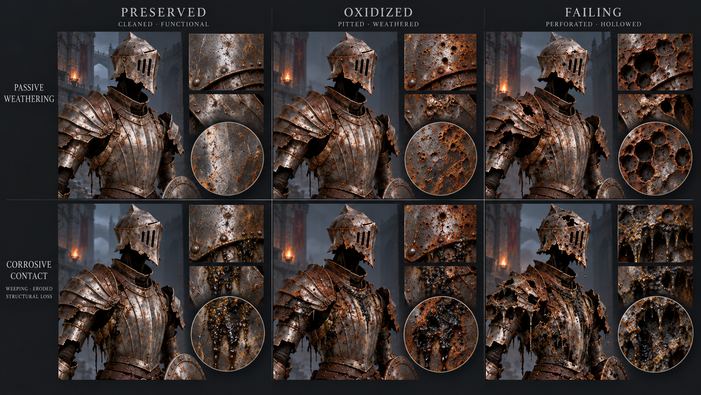
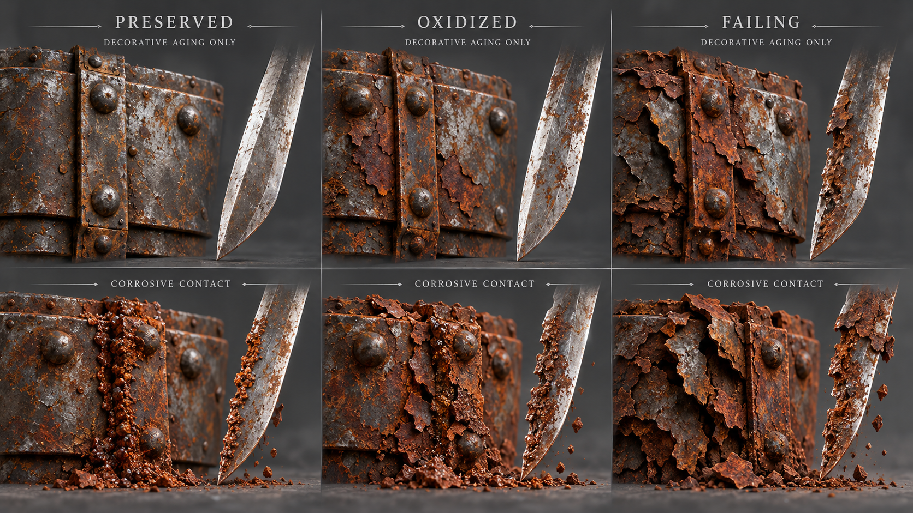
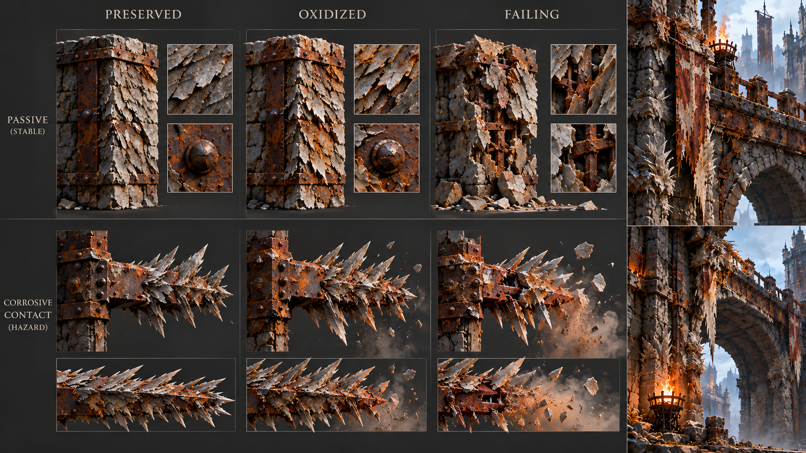
A uses layered flakes; B uses pitting and wet cavities; C uses brittle fins. The preserved samples still show considerable aging. B depicts armor deterioration as a material demonstration; only weapon/shield destruction is confirmed gameplay.
Date: 2026-10-20. Status: B — Pitted cavities selected by the owner on 2026-10-20. Other options are preserved alternatives. Generator: built-in image_gen; three distinct calls. Model version and seeds are not exposed.
Reference 1: selected Lower Gatehouse L02 PNG (world architecture/material/light). Reference 2: original Penitent Harness PNG (protagonist identity when present; world/material compatibility for new enemies). References are preserved in the same project card.
The selected concept is B — Pitted cavities. Approval establishes visual direction. Existing gameplay invariants remain authoritative; illustrative UI prices, slot counts, input glyphs, boss dimensions and pose details do not add mechanics. Exact generation prompts below are unchanged.
A uses layered flakes; B uses pitting and wet cavities; C uses brittle fins. The preserved samples still show considerable aging. B depicts armor deterioration as a material demonstration; only weapon/shield destruction is confirmed gameplay.
Use case: stylized-concept. Create ONE reviewable concept image for a gothic medieval 2.5D metroidvania. Input image 1 is the APPROVED WORLD/MATERIAL/LIGHT reference: Corroded Bastion masonry, riveted corroded iron and L02 Cold Skylight, restrained cool daylight with localized warm braziers. Input image 2 is the APPROVED PROTAGONIST IDENTITY reference, Penitent Harness: lean elongated asymmetric repaired armor, angular chipped slit helmet, fluted breastplate, dark hollow neck/gaps with NO body, straight sword and ROUND buckler. Do not redesign the protagonist. Use references as actual visual guides, not as text to reproduce. These are exploratory raster concepts, not game captures or technical production sheets. Preserve readable large shapes and avoid uniform orange tint, modern machinery, steampunk, neon magic or watermarks. All new designs remain proposals. Wide landscape MATERIAL STUDY BOARD. Compare the SAME riveted iron coupon and sword edge in three columns labelled PRESERVED, OXIDIZED, FAILING. Top row shows decorative aging only; bottom row labelled CORROSIVE CONTACT shows corresponding visibly dangerous contact sources. Direction: layered reddish-brown SHEET FLAKES and curled scale, silver remaining core, deep seams. Passive rust is dry flat scale; damaging surfaces have a clearly jagged raised rim and continuous falling coarse oxide grains. Use the same cool neutral lighting for all samples, large tactile readable closeups, no extra props. Show differences through SHAPE and material state, not just hue. Small labels only.
Use case: stylized-concept. Create ONE reviewable concept image for a gothic medieval 2.5D metroidvania. Input image 1 is the APPROVED WORLD/MATERIAL/LIGHT reference: Corroded Bastion masonry, riveted corroded iron and L02 Cold Skylight, restrained cool daylight with localized warm braziers. Input image 2 is the APPROVED PROTAGONIST IDENTITY reference, Penitent Harness: lean elongated asymmetric repaired armor, angular chipped slit helmet, fluted breastplate, dark hollow neck/gaps with NO body, straight sword and ROUND buckler. Do not redesign the protagonist. Use references as actual visual guides, not as text to reproduce. These are exploratory raster concepts, not game captures or technical production sheets. Preserve readable large shapes and avoid uniform orange tint, modern machinery, steampunk, neon magic or watermarks. All new designs remain proposals. Wide landscape MATERIAL STUDY BOARD. Same three-column structure with PRESERVED, OXIDIZED, FAILING; top passive samples and bottom CORROSIVE CONTACT danger samples. Distinct direction: deep PITTING AND HONEYCOMB erosion with dark porous recesses rather than curled sheet flakes. Passive weathering is dry pitted iron; damaging contact surfaces have weeping dark mineral seams, beaded corrosive residue and conspicuously ragged cavities. Keep this medieval mineral corrosion, not organic flesh. Silver core becomes thinner and perforated by the failing state. Cool neutral light, accurate close-up texture, clear material-state shapes, restrained rust palette.
Use case: stylized-concept. Create ONE reviewable concept image for a gothic medieval 2.5D metroidvania. Input image 1 is the APPROVED WORLD/MATERIAL/LIGHT reference: Corroded Bastion masonry, riveted corroded iron and L02 Cold Skylight, restrained cool daylight with localized warm braziers. Input image 2 is the APPROVED PROTAGONIST IDENTITY reference, Penitent Harness: lean elongated asymmetric repaired armor, angular chipped slit helmet, fluted breastplate, dark hollow neck/gaps with NO body, straight sword and ROUND buckler. Do not redesign the protagonist. Use references as actual visual guides, not as text to reproduce. These are exploratory raster concepts, not game captures or technical production sheets. Preserve readable large shapes and avoid uniform orange tint, modern machinery, steampunk, neon magic or watermarks. All new designs remain proposals. Wide landscape MATERIAL STUDY BOARD. Same comparison columns PRESERVED, OXIDIZED, FAILING; passive top row and CORROSIVE CONTACT hazard bottom row. Distinct direction: BRITTLE LAMINAR crust, thin blade-like mineral fins, pale grey ash mixed with russet oxide; the final sample sheds whole fragments and exposes a thin broken iron core. Passive material is compact dry crust; damaging contact sources have projecting serrated fins and a visible local grey-orange shedding plume. The hazardous silhouette must remain recognizable without color. Neutral cool lighting, clear large sample silhouettes and readable construction. No magic energy. Focus on material coupons, sword edges, shield plates and fortress iron, not changes to the protagonist's armor. No character depictions on this board.
Three room proposals, each pairing identical before/after framing and a readable route change.
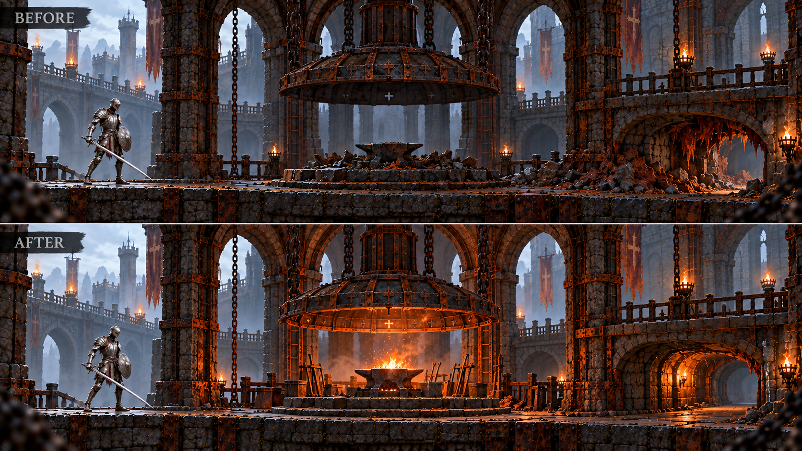
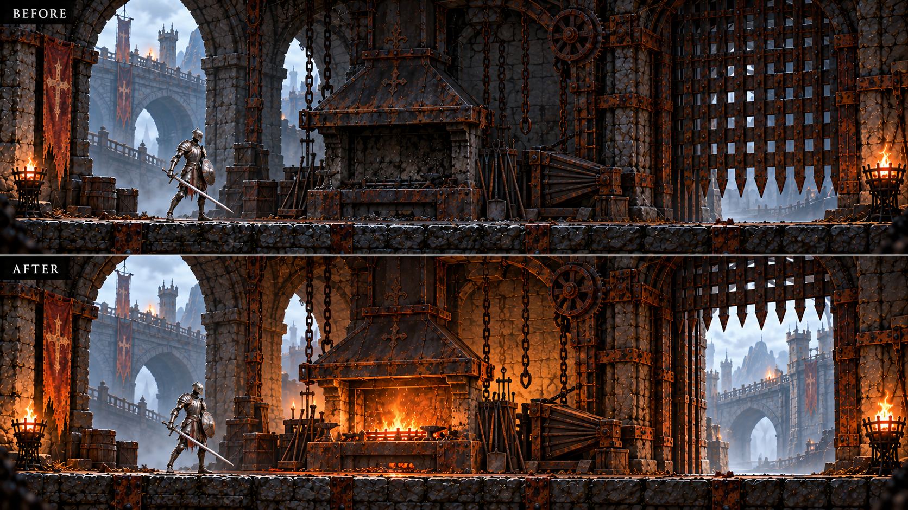
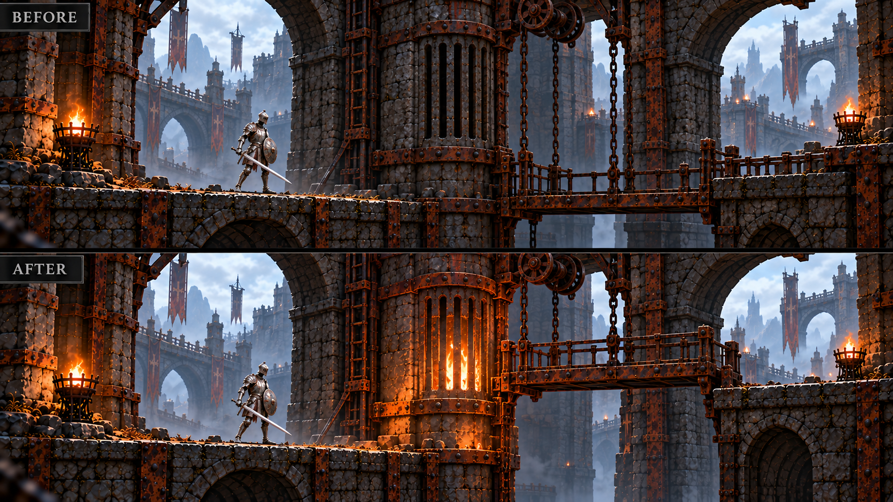
Three matched before/after proposals with different forge structures. B needs a spatial pass: its bridge positions do not yet prove a blocked-to-open playable route. These images are not room geometry or event validation.
Date: 2026-10-20. Status: C — Circular anvil and passage selected by the owner on 2026-10-20. Other options are preserved alternatives. Generator: built-in image_gen; three distinct calls. Model version and seeds are not exposed.
Reference 1: selected Lower Gatehouse L02 PNG (world architecture/material/light). Reference 2: original Penitent Harness PNG (protagonist identity when present; world/material compatibility for new enemies). References are preserved in the same project card.
The selected concept is C — Circular anvil and passage. Approval establishes visual direction. Existing gameplay invariants remain authoritative; illustrative UI prices, slot counts, input glyphs, boss dimensions and pose details do not add mechanics. Exact generation prompts below are unchanged.
Three matched before/after proposals with different forge structures. B needs a spatial pass: its bridge positions do not yet prove a blocked-to-open playable route. These images are not room geometry or event validation.
Use case: stylized-concept. Create ONE reviewable concept image for a gothic medieval 2.5D metroidvania. Input image 1 is the APPROVED WORLD/MATERIAL/LIGHT reference: Corroded Bastion masonry, riveted corroded iron and L02 Cold Skylight, restrained cool daylight with localized warm braziers. Input image 2 is the APPROVED PROTAGONIST IDENTITY reference, Penitent Harness: lean elongated asymmetric repaired armor, angular chipped slit helmet, fluted breastplate, dark hollow neck/gaps with NO body, straight sword and ROUND buckler. Do not redesign the protagonist. Use references as actual visual guides, not as text to reproduce. These are exploratory raster concepts, not game captures or technical production sheets. Preserve readable large shapes and avoid uniform orange tint, modern machinery, steampunk, neon magic or watermarks. All new designs remain proposals. Create a comparison sheet with TWO equally sized wide lateral gameplay scenes STACKED vertically, same exact room/camera/props/protagonist placement in both. Only short labels BEFORE and AFTER. OPTION A: a squat PROTECTIVE HEARTH FORGE under a broad fortress arch, with a heavy grate and side bellows. BEFORE: cold dead hearth, pervasive oxide and a closed corroded gate blocking the right route. AFTER: the same forge rekindled, localized warm protective heat and less loose oxide near the hearth, the same gate clearly raised to reveal the right exit. Preserve cold skylight outside the protected zone; distant iron remains rusty, not universally repaired. Put one exact small Penitent Harness protagonist in each panel for scale. No enemies. Stage the route change clearly as a proposal, no labels claiming implemented behavior.
Use case: stylized-concept. Create ONE reviewable concept image for a gothic medieval 2.5D metroidvania. Input image 1 is the APPROVED WORLD/MATERIAL/LIGHT reference: Corroded Bastion masonry, riveted corroded iron and L02 Cold Skylight, restrained cool daylight with localized warm braziers. Input image 2 is the APPROVED PROTAGONIST IDENTITY reference, Penitent Harness: lean elongated asymmetric repaired armor, angular chipped slit helmet, fluted breastplate, dark hollow neck/gaps with NO body, straight sword and ROUND buckler. Do not redesign the protagonist. Use references as actual visual guides, not as text to reproduce. These are exploratory raster concepts, not game captures or technical production sheets. Preserve readable large shapes and avoid uniform orange tint, modern machinery, steampunk, neon magic or watermarks. All new designs remain proposals. Two stacked wide gameplay panels labelled BEFORE and AFTER, IDENTICAL lateral camera and room geometry. OPTION B is a distinct TALL SHAFT FURNACE set into a fortress pier with vertical ventilation slots and heavy iron collars. A short suspended bridge/platform lies lowered out of the crossing in BEFORE; the forge is cold and the forward route interrupted. AFTER: contained warm fire within the same shaft furnace, its neighboring chain hoist has raised the SAME bridge into a traversable position. Show clear unchanged supports and source/destination to make this a credible event-driven route change; no free-floating new platform. Preserve grey masonry, broad arches, rusted iron and cool ambient light. Exact selected hollow armor appears once per panel at equal gameplay scale. Corrosion protection is localized rather than instant rebuilding of ruined walls.
Use case: stylized-concept. Create ONE reviewable concept image for a gothic medieval 2.5D metroidvania. Input image 1 is the APPROVED WORLD/MATERIAL/LIGHT reference: Corroded Bastion masonry, riveted corroded iron and L02 Cold Skylight, restrained cool daylight with localized warm braziers. Input image 2 is the APPROVED PROTAGONIST IDENTITY reference, Penitent Harness: lean elongated asymmetric repaired armor, angular chipped slit helmet, fluted breastplate, dark hollow neck/gaps with NO body, straight sword and ROUND buckler. Do not redesign the protagonist. Use references as actual visual guides, not as text to reproduce. These are exploratory raster concepts, not game captures or technical production sheets. Preserve readable large shapes and avoid uniform orange tint, modern machinery, steampunk, neon magic or watermarks. All new designs remain proposals. Two stacked wide lateral gameplay scenes labelled BEFORE and AFTER with perfectly matched camera, architecture and Penitent Harness position. OPTION C: a low CIRCULAR ANVIL FORGE inside a recessed stone rotunda, radial iron ribs and a small central working fire. BEFORE: the hearth is extinguished, loose flaking oxide and corrosive mineral residue obstruct a low side passage beneath a landing. AFTER: the same protective forge burns, a clearly bounded dry stable path through that SAME passage is now usable, with reduced loose residue and warm reflected light locally. Keep corroded structure outside the protected area. This is a proposed visual event state, not continuously spreading rust or a player rust power. Strong contrast between unchanged cold fortress and protected hearth. No additional characters.
Three distinct sword-enemy silhouettes, each with standing, side and attack-anticipation views.
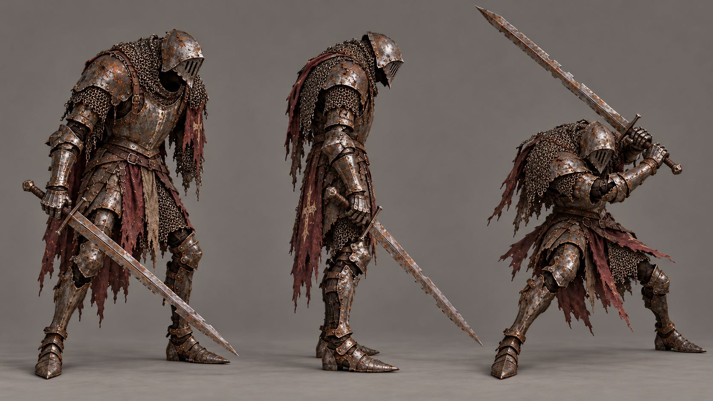
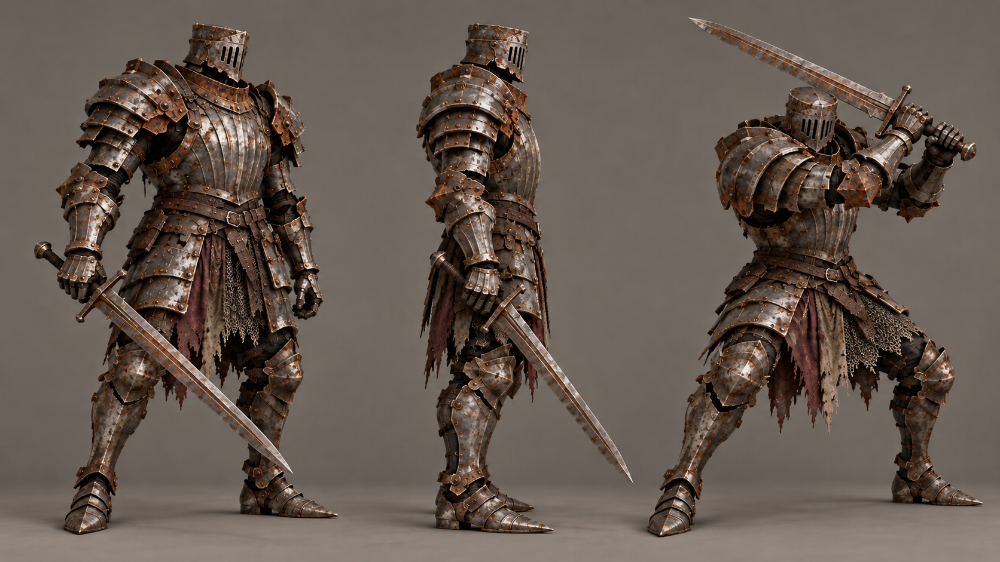
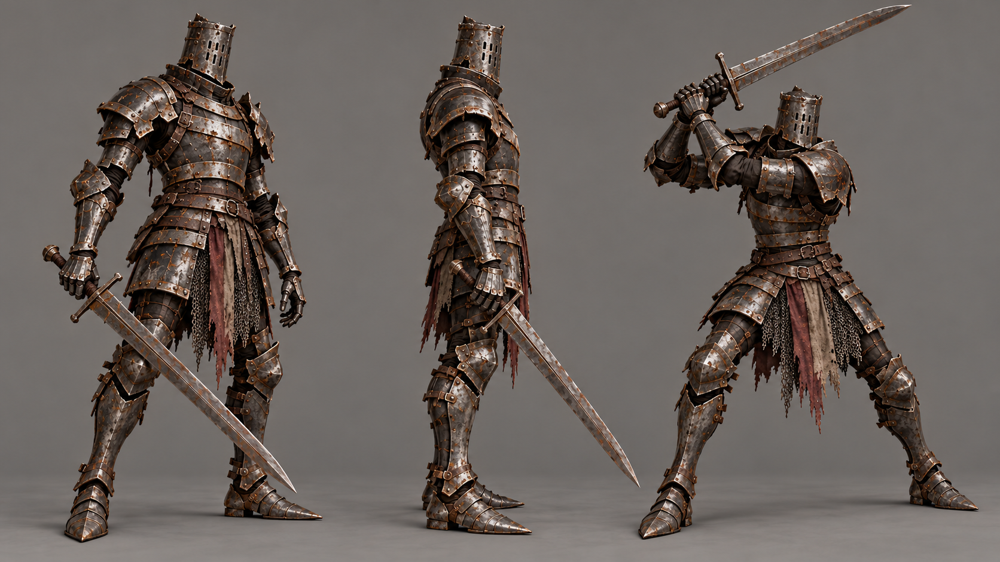
A is broad and rectangular, B hunched under mail, C tall with banded plate. Views and anticipation poses are concepts; articulation, pose timing and orthographic consistency remain unverified.
Date: 2026-10-20. Status: B — Hunched Mail Veteran selected by the owner on 2026-10-20. Other options are preserved alternatives. Generator: built-in image_gen; three distinct calls. Model version and seeds are not exposed.
Reference 1: selected Lower Gatehouse L02 PNG (world architecture/material/light). Reference 2: original Penitent Harness PNG (protagonist identity when present; world/material compatibility for new enemies). References are preserved in the same project card.
The selected concept is B — Hunched Mail Veteran. Approval establishes visual direction. Existing gameplay invariants remain authoritative; illustrative UI prices, slot counts, input glyphs, boss dimensions and pose details do not add mechanics. Exact generation prompts below are unchanged.
A is broad and rectangular, B hunched under mail, C tall with banded plate. Views and anticipation poses are concepts; articulation, pose timing and orthographic consistency remain unverified.
Use case: stylized-concept. Create ONE reviewable concept image for a gothic medieval 2.5D metroidvania. Input image 1 is the APPROVED WORLD/MATERIAL/LIGHT reference: Corroded Bastion masonry, riveted corroded iron and L02 Cold Skylight, restrained cool daylight with localized warm braziers. Input image 2 is the APPROVED PROTAGONIST IDENTITY reference, Penitent Harness: lean elongated asymmetric repaired armor, angular chipped slit helmet, fluted breastplate, dark hollow neck/gaps with NO body, straight sword and ROUND buckler. Do not redesign the protagonist. Use references as actual visual guides, not as text to reproduce. These are exploratory raster concepts, not game captures or technical production sheets. Preserve readable large shapes and avoid uniform orange tint, modern machinery, steampunk, neon magic or watermarks. All new designs remain proposals. Landscape 16:9 character concept board, plain mid-grey background with subtle floor shadow, soft cool studio lighting. Three full-body views of ONE proposed enemy design: a large 3/4 standing view, a strict right-facing side view, and one readable anticipation pose for its single weapon. Same identity and equipment in all three; no duplicate limbs, floating weapons, labels or text. The design must be clearly different from the slender silver Penitent Harness protagonist. Keep weapon and limbs separate in silhouette. Believable articulated corroded medieval gear, useful as a later modeling reference, not a validated turnaround. OPTION A: BROAD GATE GUARD. Stocky rectangular torso, low flat-topped closed helmet, heavy square layered shoulders, short torn mail skirt and one plain heavy straight sword. Concentrated rust wedges at collar/elbows, darker and broader than protagonist. No shield, cape, glowing eyes or new ranged weapon. Anticipation pose draws the sword visibly back at shoulder height.
Use case: stylized-concept. Create ONE reviewable concept image for a gothic medieval 2.5D metroidvania. Input image 1 is the APPROVED WORLD/MATERIAL/LIGHT reference: Corroded Bastion masonry, riveted corroded iron and L02 Cold Skylight, restrained cool daylight with localized warm braziers. Input image 2 is the APPROVED PROTAGONIST IDENTITY reference, Penitent Harness: lean elongated asymmetric repaired armor, angular chipped slit helmet, fluted breastplate, dark hollow neck/gaps with NO body, straight sword and ROUND buckler. Do not redesign the protagonist. Use references as actual visual guides, not as text to reproduce. These are exploratory raster concepts, not game captures or technical production sheets. Preserve readable large shapes and avoid uniform orange tint, modern machinery, steampunk, neon magic or watermarks. All new designs remain proposals. Landscape 16:9 character concept board, plain mid-grey background with subtle floor shadow, soft cool studio lighting. Three full-body views of ONE proposed enemy design: a large 3/4 standing view, a strict right-facing side view, and one readable anticipation pose for its single weapon. Same identity and equipment in all three; no duplicate limbs, floating weapons, labels or text. The design must be clearly different from the slender silver Penitent Harness protagonist. Keep weapon and limbs separate in silhouette. Believable articulated corroded medieval gear, useful as a later modeling reference, not a validated turnaround. OPTION B: HUNCHED MAIL VETERAN. Forward-stooped head beneath a low rounded iron hood, bulky chainmail upper back, narrow battered breastplate and long split cloth strips, wiry legs. One long notched sword held low. Distinct hunched crescent silhouette instead of square shoulders. Iron grey and dark red oxide, face concealed in ordinary shadow, no gore or neon. No shield. Anticipation pose is a readable low two-handed windup with the sword, no extra weapons.
Use case: stylized-concept. Create ONE reviewable concept image for a gothic medieval 2.5D metroidvania. Input image 1 is the APPROVED WORLD/MATERIAL/LIGHT reference: Corroded Bastion masonry, riveted corroded iron and L02 Cold Skylight, restrained cool daylight with localized warm braziers. Input image 2 is the APPROVED PROTAGONIST IDENTITY reference, Penitent Harness: lean elongated asymmetric repaired armor, angular chipped slit helmet, fluted breastplate, dark hollow neck/gaps with NO body, straight sword and ROUND buckler. Do not redesign the protagonist. Use references as actual visual guides, not as text to reproduce. These are exploratory raster concepts, not game captures or technical production sheets. Preserve readable large shapes and avoid uniform orange tint, modern machinery, steampunk, neon magic or watermarks. All new designs remain proposals. Landscape 16:9 character concept board, plain mid-grey background with subtle floor shadow, soft cool studio lighting. Three full-body views of ONE proposed enemy design: a large 3/4 standing view, a strict right-facing side view, and one readable anticipation pose for its single weapon. Same identity and equipment in all three; no duplicate limbs, floating weapons, labels or text. The design must be clearly different from the slender silver Penitent Harness protagonist. Keep weapon and limbs separate in silhouette. Believable articulated corroded medieval gear, useful as a later modeling reference, not a validated turnaround. OPTION C: BANDED WATCHMAN. Tall straight rigid silhouette with a narrow cylindrical perforated helm, horizontal bands of repaired iron around the torso, angular modest shoulder plates and separate plated shins. One broad single straight sword. Big dark plate bands and small pale worn edges, fewer fine details. No halo or creature spikes. No shield. Anticipation raises the sword overhead with a clear open triangular negative space between arms and body. Preserve believable joints.
Three bow-enemy silhouettes with a readable drawn-bow anticipation.
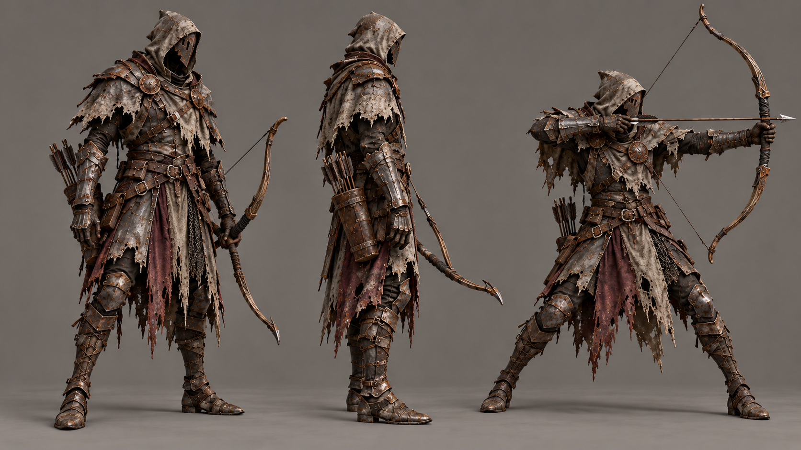
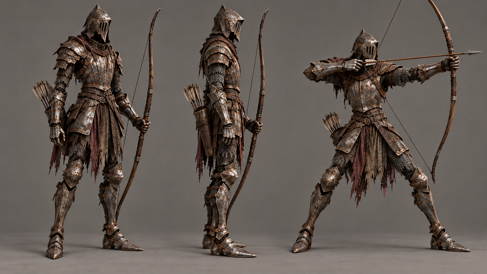
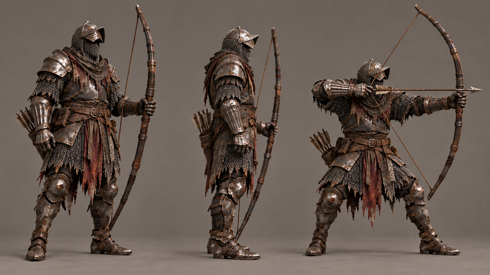
A follows the selected armor family closely, B has a cloth mantle and C a rounded visor/mail silhouette. The drawn-bow tip in A is cropped. These are concepts, not complete animation or modeling sheets.
Date: 2026-10-20. Status: B — Mantled Wall Hunter selected by the owner on 2026-10-20. Other options are preserved alternatives. Generator: built-in image_gen; three distinct calls. Model version and seeds are not exposed.
Reference 1: selected Lower Gatehouse L02 PNG (world architecture/material/light). Reference 2: original Penitent Harness PNG (protagonist identity when present; world/material compatibility for new enemies). References are preserved in the same project card.
The selected concept is B — Mantled Wall Hunter. Approval establishes visual direction. Existing gameplay invariants remain authoritative; illustrative UI prices, slot counts, input glyphs, boss dimensions and pose details do not add mechanics. Exact generation prompts below are unchanged.
A follows the selected armor family closely, B has a cloth mantle and C a rounded visor/mail silhouette. The drawn-bow tip in A is cropped. These are concepts, not complete animation or modeling sheets.
Use case: stylized-concept. Create ONE reviewable concept image for a gothic medieval 2.5D metroidvania. Input image 1 is the APPROVED WORLD/MATERIAL/LIGHT reference: Corroded Bastion masonry, riveted corroded iron and L02 Cold Skylight, restrained cool daylight with localized warm braziers. Input image 2 is the APPROVED PROTAGONIST IDENTITY reference, Penitent Harness: lean elongated asymmetric repaired armor, angular chipped slit helmet, fluted breastplate, dark hollow neck/gaps with NO body, straight sword and ROUND buckler. Do not redesign the protagonist. Use references as actual visual guides, not as text to reproduce. These are exploratory raster concepts, not game captures or technical production sheets. Preserve readable large shapes and avoid uniform orange tint, modern machinery, steampunk, neon magic or watermarks. All new designs remain proposals. Landscape 16:9 character concept board, plain mid-grey background with subtle floor shadow, soft cool studio lighting. Three full-body views of ONE proposed enemy design: a large 3/4 standing view, a strict right-facing side view, and one readable anticipation pose for its single weapon. Same identity and equipment in all three; no duplicate limbs, floating weapons, labels or text. The design must be clearly different from the slender silver Penitent Harness protagonist. Keep weapon and limbs separate in silhouette. Believable articulated corroded medieval gear, useful as a later modeling reference, not a validated turnaround. OPTION A: IRON-COWL ARCHER. Narrow hood-like angular iron coif, compact half-plate torso, relatively bare flexible mail elbows, short dark tabard and a tall plain wooden longbow. Small side quiver with clear arrow fletching. Thin upright silhouette, much lighter shoulders than swordsman. Cool dark iron, restrained oxide and faded brown cloth. Anticipation clearly draws one arrow to the concealed cheek. No crossbow, magic or sword.
Use case: stylized-concept. Create ONE reviewable concept image for a gothic medieval 2.5D metroidvania. Input image 1 is the APPROVED WORLD/MATERIAL/LIGHT reference: Corroded Bastion masonry, riveted corroded iron and L02 Cold Skylight, restrained cool daylight with localized warm braziers. Input image 2 is the APPROVED PROTAGONIST IDENTITY reference, Penitent Harness: lean elongated asymmetric repaired armor, angular chipped slit helmet, fluted breastplate, dark hollow neck/gaps with NO body, straight sword and ROUND buckler. Do not redesign the protagonist. Use references as actual visual guides, not as text to reproduce. These are exploratory raster concepts, not game captures or technical production sheets. Preserve readable large shapes and avoid uniform orange tint, modern machinery, steampunk, neon magic or watermarks. All new designs remain proposals. Landscape 16:9 character concept board, plain mid-grey background with subtle floor shadow, soft cool studio lighting. Three full-body views of ONE proposed enemy design: a large 3/4 standing view, a strict right-facing side view, and one readable anticipation pose for its single weapon. Same identity and equipment in all three; no duplicate limbs, floating weapons, labels or text. The design must be clearly different from the slender silver Penitent Harness protagonist. Keep weapon and limbs separate in silhouette. Believable articulated corroded medieval gear, useful as a later modeling reference, not a validated turnaround. OPTION B: MANTLED WALL HUNTER. Broad short ragged shoulder mantle over worn leather, a slim rusted half-mask, long asymmetric split skirt and narrow boots. One curved wooden recurve bow and a hip quiver. Distinct sloped triangular mantle silhouette, no cape hiding the legs or full body. Concentrate corrosion on metal fittings, not the wood. Anticipation has a side-on full draw and readable separation of bowstring, arrow and arm. No guns or magic. IMPORTANT: This is a NEW ENEMY, not the protagonist wearing a bow. Image 2 guides only the world's material quality; do NOT reuse its angular slit helmet, fluted breastplate or pointed boot silhouette. Follow this enemy's distinct cowl/mask, body proportions and construction. All bow tips and weapons must remain inside the frame.
Use case: stylized-concept. Create ONE reviewable concept image for a gothic medieval 2.5D metroidvania. Input image 1 is the APPROVED WORLD/MATERIAL/LIGHT reference: Corroded Bastion masonry, riveted corroded iron and L02 Cold Skylight, restrained cool daylight with localized warm braziers. Input image 2 is the APPROVED PROTAGONIST IDENTITY reference, Penitent Harness: lean elongated asymmetric repaired armor, angular chipped slit helmet, fluted breastplate, dark hollow neck/gaps with NO body, straight sword and ROUND buckler. Do not redesign the protagonist. Use references as actual visual guides, not as text to reproduce. These are exploratory raster concepts, not game captures or technical production sheets. Preserve readable large shapes and avoid uniform orange tint, modern machinery, steampunk, neon magic or watermarks. All new designs remain proposals. Landscape 16:9 character concept board, plain mid-grey background with subtle floor shadow, soft cool studio lighting. Three full-body views of ONE proposed enemy design: a large 3/4 standing view, a strict right-facing side view, and one readable anticipation pose for its single weapon. Same identity and equipment in all three; no duplicate limbs, floating weapons, labels or text. The design must be clearly different from the slender silver Penitent Harness protagonist. Keep weapon and limbs separate in silhouette. Believable articulated corroded medieval gear, useful as a later modeling reference, not a validated turnaround. OPTION C: MAIL-AND-VISOR BOWMAN. Compact stout archer with a small lifted protective brow visor, rounded mail hood, ribbed iron forearm guards and an oversized practical tall war bow. Broad belt and short broken metal skirt, mobile uncovered mail knees. Clear compact blocky body versus long vertical bow, distinct from A and B. Dark iron with pale worn planes and russet seams. Anticipation bends the bow with one nocked arrow. Do not give it a crossbow, shield or glowing projectile. IMPORTANT: This is a NEW ENEMY, not the protagonist wearing a bow. Image 2 guides only the world's material quality; do NOT reuse its angular slit helmet, fluted breastplate or pointed boot silhouette. Follow this enemy's distinct cowl/mask, body proportions and construction. All bow tips and weapons must remain inside the frame.
Three alternative boss identities; appearance and weapons are proposals, not approved mechanics.
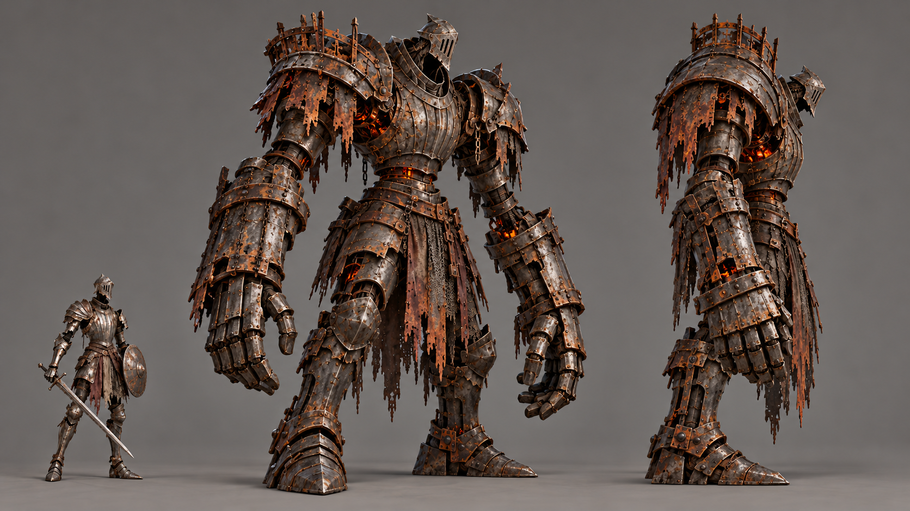
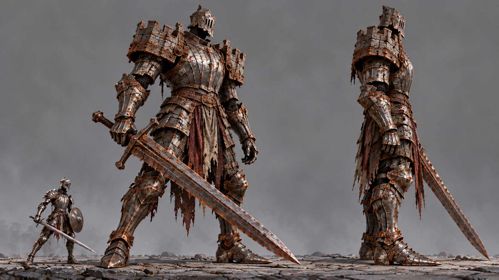
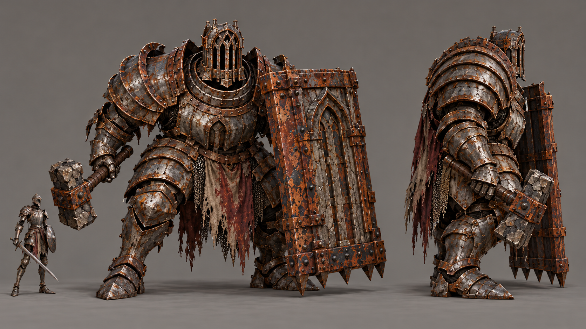
Three proposed silhouettes and weapon sets: castellan, shield warden and furnace colossus. Relative size is illustrative and differs from prompt targets. No boss name, dimensions, weapon or behavior is approved by this generation.
Date: 2026-10-20. Status: C — Ashbound Colossus selected by the owner on 2026-10-20. Other options are preserved alternatives. Generator: built-in image_gen; three distinct calls. Model version and seeds are not exposed.
Reference 1: selected Lower Gatehouse L02 PNG (world architecture/material/light). Reference 2: original Penitent Harness PNG (protagonist identity when present; world/material compatibility for new enemies). References are preserved in the same project card.
The selected concept is C — Ashbound Colossus. Approval establishes visual direction. Existing gameplay invariants remain authoritative; illustrative UI prices, slot counts, input glyphs, boss dimensions and pose details do not add mechanics. Exact generation prompts below are unchanged.
Three proposed silhouettes and weapon sets: castellan, shield warden and furnace colossus. Relative size is illustrative and differs from prompt targets. No boss name, dimensions, weapon or behavior is approved by this generation.
Use case: stylized-concept. Create ONE reviewable concept image for a gothic medieval 2.5D metroidvania. Input image 1 is the APPROVED WORLD/MATERIAL/LIGHT reference: Corroded Bastion masonry, riveted corroded iron and L02 Cold Skylight, restrained cool daylight with localized warm braziers. Input image 2 is the APPROVED PROTAGONIST IDENTITY reference, Penitent Harness: lean elongated asymmetric repaired armor, angular chipped slit helmet, fluted breastplate, dark hollow neck/gaps with NO body, straight sword and ROUND buckler. Do not redesign the protagonist. Use references as actual visual guides, not as text to reproduce. These are exploratory raster concepts, not game captures or technical production sheets. Preserve readable large shapes and avoid uniform orange tint, modern machinery, steampunk, neon magic or watermarks. All new designs remain proposals. Landscape boss concept board on neutral grey stone ground, one large 3/4 full-body boss and one right-facing side view of the SAME boss, plus a small faithful Penitent Harness protagonist at their feet solely for relative scale. OPTION A: THE CORRODED CASTELLAN, a monumental upright humanoid in fused heavy fortress plate, broad shoulders shaped like worn battlements and a massive straight greatsword. Approximately twice hero height. Strong severe silhouette, closed angular helmet with black gaps, rust plates peel around joints; broad readable articulation. Medieval material logic without spike clutter, sci-fi, glowing eyes, flesh gore or throne. Pose readable before a deliberate sword blow. Cold daylight and small warm metal reflections, matching supplied world. No text.
Use case: stylized-concept. Create ONE reviewable concept image for a gothic medieval 2.5D metroidvania. Input image 1 is the APPROVED WORLD/MATERIAL/LIGHT reference: Corroded Bastion masonry, riveted corroded iron and L02 Cold Skylight, restrained cool daylight with localized warm braziers. Input image 2 is the APPROVED PROTAGONIST IDENTITY reference, Penitent Harness: lean elongated asymmetric repaired armor, angular chipped slit helmet, fluted breastplate, dark hollow neck/gaps with NO body, straight sword and ROUND buckler. Do not redesign the protagonist. Use references as actual visual guides, not as text to reproduce. These are exploratory raster concepts, not game captures or technical production sheets. Preserve readable large shapes and avoid uniform orange tint, modern machinery, steampunk, neon magic or watermarks. All new designs remain proposals. Landscape boss design board, plain neutral grey ground. One full-body 3/4 design and matching side view of ONE boss, plus a tiny faithful Penitent Harness for scale. OPTION B: THE GATE WARDEN, a squat immensely broad armored guardian, closed cage-like arch helmet, layered circular shoulder collars and heavy compressed legs. Roughly one-and-a-half hero height but three times body width. One large corroded rectangular tower shield and short stone-headed medieval war hammer, readable separate shapes. This is a visual weapon proposal, not a confirmed mechanic. Heavy rivets, recessed stone-arch motif and dark orange iron oxide. Distinct horizontal defensive silhouette, no long cape, steampunk or glowing magic. Grey/cool studio light, grounded contact shadows, no text.
Use case: stylized-concept. Create ONE reviewable concept image for a gothic medieval 2.5D metroidvania. Input image 1 is the APPROVED WORLD/MATERIAL/LIGHT reference: Corroded Bastion masonry, riveted corroded iron and L02 Cold Skylight, restrained cool daylight with localized warm braziers. Input image 2 is the APPROVED PROTAGONIST IDENTITY reference, Penitent Harness: lean elongated asymmetric repaired armor, angular chipped slit helmet, fluted breastplate, dark hollow neck/gaps with NO body, straight sword and ROUND buckler. Do not redesign the protagonist. Use references as actual visual guides, not as text to reproduce. These are exploratory raster concepts, not game captures or technical production sheets. Preserve readable large shapes and avoid uniform orange tint, modern machinery, steampunk, neon magic or watermarks. All new designs remain proposals. Landscape boss design board on simple grey ground. One large full-body 3/4 view and coherent side view of the SAME boss, plus a small exact Penitent Harness protagonist for scale. OPTION C: THE ASHBOUND COLOSSUS, a tall forward-curving armored construct assembled from scorched furnace bands and hanging fused iron plates, narrow waist, very long heavy articulated forearms and huge worn gauntlets. Around two-and-a-half hero height. Distinct arched asymmetric silhouette with one low shoulder and one high layered shoulder, a deeply recessed angular helm. No separate sword or shield; hands are the visual threat. Small warm residual fire only deep in a few furnace seams, not glowing neon skin. Preserve medieval forged construction and localized rust, no mechanical gears or organic monster flesh. Cold key light, no labels.
Fixed grapple anchors, traversable ledges, gates, corrosive danger, safe points and purchase points.
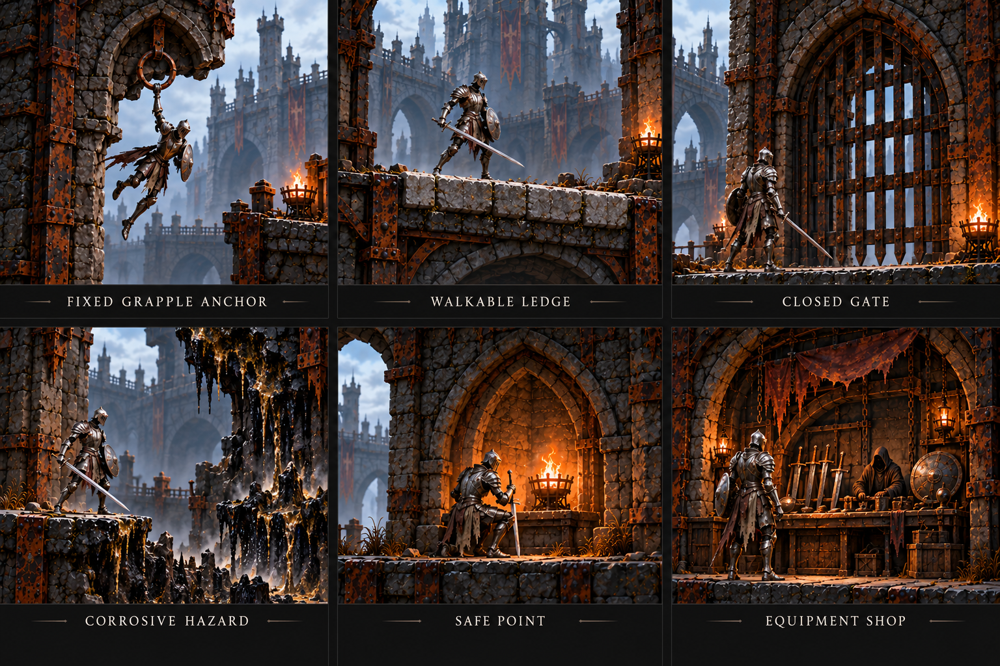
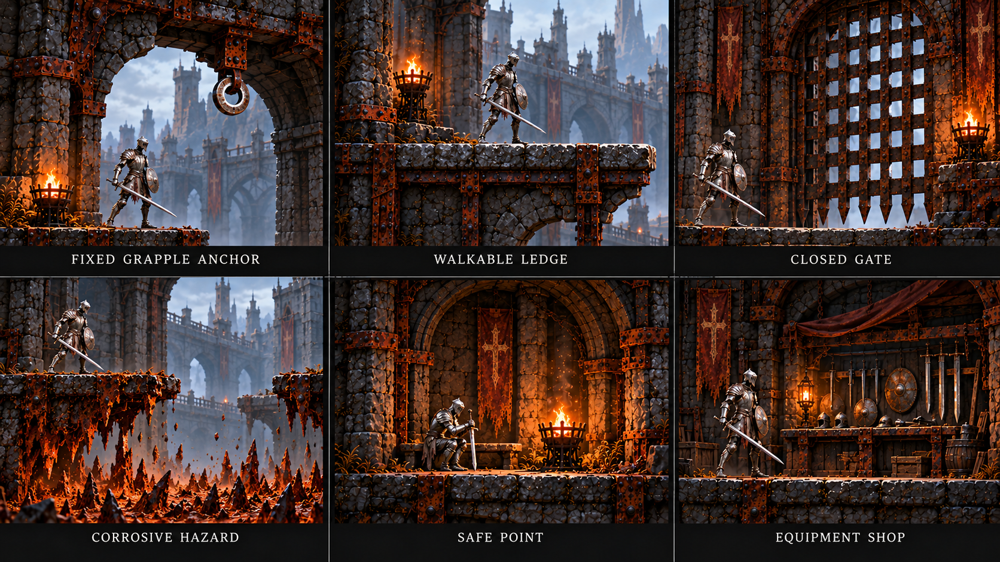
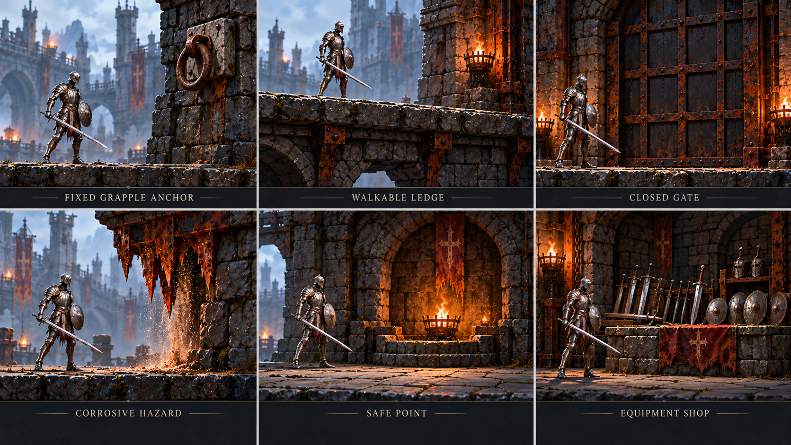
A favors heavy fittings, B Gothic niches, C broad stone. A/C hazard imagery can resemble embers; B depicts hanging at an anchor. Use these as object-language proposals: the confirmed hook pulls toward fixed anchors and does not add swinging.
Date: 2026-10-20. Status: B — Gothic stone insets selected by the owner on 2026-10-20. Other options are preserved alternatives. Generator: built-in image_gen; three distinct calls. Model version and seeds are not exposed.
Reference 1: selected Lower Gatehouse L02 PNG (world architecture/material/light). Reference 2: original Penitent Harness PNG (protagonist identity when present; world/material compatibility for new enemies). References are preserved in the same project card.
The selected concept is B — Gothic stone insets. Approval establishes visual direction. Existing gameplay invariants remain authoritative; illustrative UI prices, slot counts, input glyphs, boss dimensions and pose details do not add mechanics. Exact generation prompts below are unchanged.
A favors heavy fittings, B Gothic niches, C broad stone. A/C hazard imagery can resemble embers; B depicts hanging at an anchor. Use these as object-language proposals: the confirmed hook pulls toward fixed anchors and does not add swinging.
Use case: stylized-concept. Create ONE reviewable concept image for a gothic medieval 2.5D metroidvania. Input image 1 is the APPROVED WORLD/MATERIAL/LIGHT reference: Corroded Bastion masonry, riveted corroded iron and L02 Cold Skylight, restrained cool daylight with localized warm braziers. Input image 2 is the APPROVED PROTAGONIST IDENTITY reference, Penitent Harness: lean elongated asymmetric repaired armor, angular chipped slit helmet, fluted breastplate, dark hollow neck/gaps with NO body, straight sword and ROUND buckler. Do not redesign the protagonist. Use references as actual visual guides, not as text to reproduce. These are exploratory raster concepts, not game captures or technical production sheets. Preserve readable large shapes and avoid uniform orange tint, modern machinery, steampunk, neon magic or watermarks. All new designs remain proposals. Landscape environmental readability board with six generous separate vignettes in a 3-by-2 grid: FIXED GRAPPLE ANCHOR, WALKABLE LEDGE, CLOSED GATE, CORROSIVE HAZARD, SAFE POINT, EQUIPMENT SHOP. Short exact English labels. OPTION A uses RIVETED IRON FITTINGS: a chunky fixed circular ring with a pale steel inner rim, consistent pale worn ledge capstones, a heavy closed lattice gate, jagged raised rust scales with falling oxide particles for true corrosive danger, a compact protected warm brazier alcove for resting, and an iron workbench/anvil with orderly spare sword/shield silhouettes for purchases. Keep dangerous rust distinct from ordinary flat decorative rust, and safe versus shop distinct by shape and props. Cool fortress materials, warm safe-place accent. No rope swinging, powers, invented minimap icons or fully developed merchant character.
Use case: stylized-concept. Create ONE reviewable concept image for a gothic medieval 2.5D metroidvania. Input image 1 is the APPROVED WORLD/MATERIAL/LIGHT reference: Corroded Bastion masonry, riveted corroded iron and L02 Cold Skylight, restrained cool daylight with localized warm braziers. Input image 2 is the APPROVED PROTAGONIST IDENTITY reference, Penitent Harness: lean elongated asymmetric repaired armor, angular chipped slit helmet, fluted breastplate, dark hollow neck/gaps with NO body, straight sword and ROUND buckler. Do not redesign the protagonist. Use references as actual visual guides, not as text to reproduce. These are exploratory raster concepts, not game captures or technical production sheets. Preserve readable large shapes and avoid uniform orange tint, modern machinery, steampunk, neon magic or watermarks. All new designs remain proposals. Landscape 3-by-2 environmental signal board with the same six short labels FIXED GRAPPLE ANCHOR, WALKABLE LEDGE, CLOSED GATE, CORROSIVE HAZARD, SAFE POINT, EQUIPMENT SHOP. OPTION B uses POINTED-ARCH STONE INSETS: circular fixed grapple ring hung rigidly inside a small stone arch; large regular pale trim blocks identify traversable ledges; vertically barred arch gate for blocked route; dark pitted weeping mineral seams with ragged cavity edges for equipment-corroding danger; a clean recessed hearth niche with warm light for safe rest; a separate vaulted repair-looking WORKBENCH used only for selling replacement swords/shields, displayed stock and small trade weights, not repair gameplay. Elegant arch language, few large details. Distinguish cues by silhouette even in grey scale. No religious logos or readable invented currency names.
Use case: stylized-concept. Create ONE reviewable concept image for a gothic medieval 2.5D metroidvania. Input image 1 is the APPROVED WORLD/MATERIAL/LIGHT reference: Corroded Bastion masonry, riveted corroded iron and L02 Cold Skylight, restrained cool daylight with localized warm braziers. Input image 2 is the APPROVED PROTAGONIST IDENTITY reference, Penitent Harness: lean elongated asymmetric repaired armor, angular chipped slit helmet, fluted breastplate, dark hollow neck/gaps with NO body, straight sword and ROUND buckler. Do not redesign the protagonist. Use references as actual visual guides, not as text to reproduce. These are exploratory raster concepts, not game captures or technical production sheets. Preserve readable large shapes and avoid uniform orange tint, modern machinery, steampunk, neon magic or watermarks. All new designs remain proposals. Landscape environmental reference board, six equal vignettes labelled FIXED GRAPPLE ANCHOR, WALKABLE LEDGE, CLOSED GATE, CORROSIVE HAZARD, SAFE POINT, EQUIPMENT SHOP. OPTION C uses BROAD STONE AND MINIMAL METAL: substantial simple fixed round ring on a squared pale mounting block; clear flat capstones with dark support underside on traversable ledges; solid iron shutter to block passage; projecting brittle rust fins and a small persistent mineral shedding veil for corrosive contact; circular low protected fire recess and unbroken clean floor stones for safe rest; low stone counter with visible reserve weapons and shields for purchases. Reduce fine ornament and rely on large shape/value codes. Cold sky, localized warm protected areas. Do not imply crumbling platforms, repair abilities or new traversal mechanics. Keep these vignettes focused on props. If showing the protagonist, it must stand on the floor; do not depict swinging, hanging by hand, or new grappling behavior. No merchant person, only the purchase counter and stock.
Health, sword/shield condition, currency and ordered traversal ability indicators; no stamina.
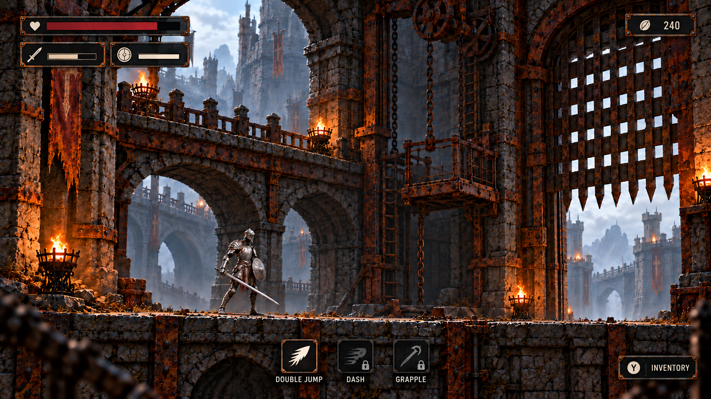
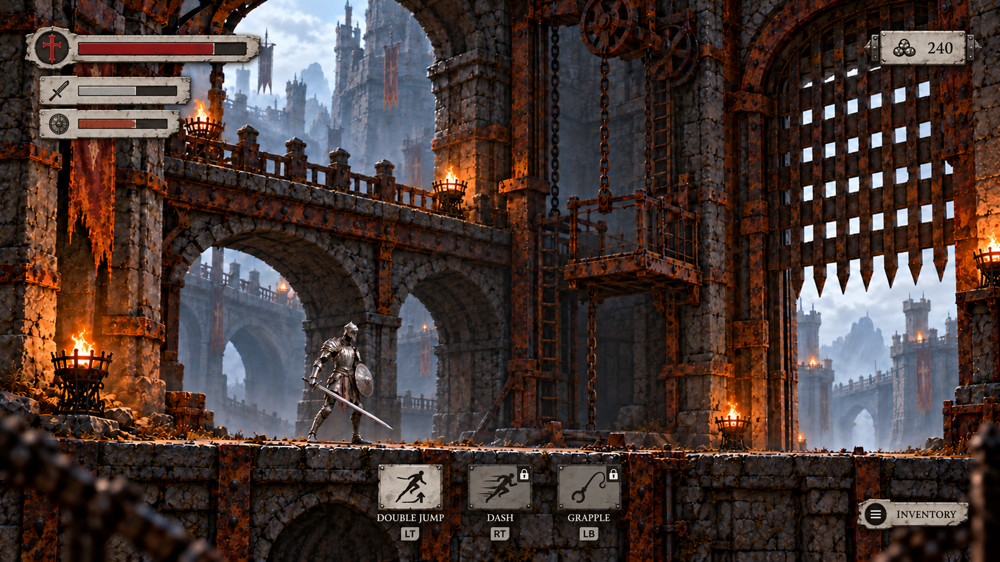
A uses dark riveted rectangles, B Gothic tracery, C pale panels. All are static raster proposals. Currency symbols, values, equipment meters and button assignments are illustrative; no control or numeric tuning is approved here.
Date: 2026-10-20. Status: B — Cathedral Tracery selected by the owner on 2026-10-20. Other options are preserved alternatives. Generator: built-in image_gen; three distinct calls. Model version and seeds are not exposed.
Reference 1: selected Lower Gatehouse L02 PNG (world architecture/material/light). Reference 2: original Penitent Harness PNG (protagonist identity when present; world/material compatibility for new enemies). References are preserved in the same project card.
The selected concept is B — Cathedral Tracery. Approval establishes visual direction. Existing gameplay invariants remain authoritative; illustrative UI prices, slot counts, input glyphs, boss dimensions and pose details do not add mechanics. Exact generation prompts below are unchanged.
A uses dark riveted rectangles, B Gothic tracery, C pale panels. All are static raster proposals. Currency symbols, values, equipment meters and button assignments are illustrative; no control or numeric tuning is approved here.
Use case: stylized-concept. Create ONE reviewable concept image for a gothic medieval 2.5D metroidvania. Input image 1 is the APPROVED WORLD/MATERIAL/LIGHT reference: Corroded Bastion masonry, riveted corroded iron and L02 Cold Skylight, restrained cool daylight with localized warm braziers. Input image 2 is the APPROVED PROTAGONIST IDENTITY reference, Penitent Harness: lean elongated asymmetric repaired armor, angular chipped slit helmet, fluted breastplate, dark hollow neck/gaps with NO body, straight sword and ROUND buckler. Do not redesign the protagonist. Use references as actual visual guides, not as text to reproduce. These are exploratory raster concepts, not game captures or technical production sheets. Preserve readable large shapes and avoid uniform orange tint, modern machinery, steampunk, neon magic or watermarks. All new designs remain proposals. Use case: ui-mockup. This is a STATIC VISUAL PROPOSAL over the supplied L02 scene, because no game runtime exists. Preserve the exact reference scene, camera, armor identity/position and practical character scale. Do not invent new rooms. Use crisp readable English typography and short labels, realistic screen margins and clear controller focus. Only established health, equipment condition, currency, traversal abilities, reserve inventory and equipment purchases; NO stamina/mana/XP/minimap, repair, upgrades, skills tree or new gameplay system. Sample numbers are illustrative, not game balance. OPTION A — RIVETED IRON. Quiet dark charcoal iron panels, sparse copper-brown corroded corner brackets, pale high-contrast sans-serif text and restrained cream icons. Rectangular economical layout, clear spacing, tiny borders; no dense ornament. Render ONE complete 16:9 gameplay screen with this HUD over the supplied scene. Upper left: compact HEALTH bar and separate SWORD / SHIELD condition indicators, clear worn-versus-intact states. Upper right: a small neutral resource icon and illustrative value 240. Bottom edge: three restrained traversal icons in order DOUBLE JUMP, DASH, GRAPPLE; the first is available, the later two are visibly locked without suggesting loss of equipment. Keep center screen and hero fully unobstructed. Small lower corner input hint INVENTORY. No open menu overlay. Ensure readable at normal game scale and avoid giant decorative frames.
Use case: stylized-concept. Create ONE reviewable concept image for a gothic medieval 2.5D metroidvania. Input image 1 is the APPROVED WORLD/MATERIAL/LIGHT reference: Corroded Bastion masonry, riveted corroded iron and L02 Cold Skylight, restrained cool daylight with localized warm braziers. Input image 2 is the APPROVED PROTAGONIST IDENTITY reference, Penitent Harness: lean elongated asymmetric repaired armor, angular chipped slit helmet, fluted breastplate, dark hollow neck/gaps with NO body, straight sword and ROUND buckler. Do not redesign the protagonist. Use references as actual visual guides, not as text to reproduce. These are exploratory raster concepts, not game captures or technical production sheets. Preserve readable large shapes and avoid uniform orange tint, modern machinery, steampunk, neon magic or watermarks. All new designs remain proposals. Use case: ui-mockup. This is a STATIC VISUAL PROPOSAL over the supplied L02 scene, because no game runtime exists. Preserve the exact reference scene, camera, armor identity/position and practical character scale. Do not invent new rooms. Use crisp readable English typography and short labels, realistic screen margins and clear controller focus. Only established health, equipment condition, currency, traversal abilities, reserve inventory and equipment purchases; NO stamina/mana/XP/minimap, repair, upgrades, skills tree or new gameplay system. Sample numbers are illustrative, not game balance. OPTION B — CATHEDRAL TRACERY. Slim pointed-arch corner motifs, dark desaturated blue-black surfaces, pale ivory text, delicate vertical hierarchy and restrained rust-red accents. Medieval Gothic character without ornate frames eating the content. Render ONE complete 16:9 gameplay screen with this HUD over the supplied scene. Upper left: compact HEALTH bar and separate SWORD / SHIELD condition indicators, clear worn-versus-intact states. Upper right: a small neutral resource icon and illustrative value 240. Bottom edge: three restrained traversal icons in order DOUBLE JUMP, DASH, GRAPPLE; the first is available, the later two are visibly locked without suggesting loss of equipment. Keep center screen and hero fully unobstructed. Small lower corner input hint INVENTORY. No open menu overlay. Ensure readable at normal game scale and avoid giant decorative frames.
Use case: stylized-concept. Create ONE reviewable concept image for a gothic medieval 2.5D metroidvania. Input image 1 is the APPROVED WORLD/MATERIAL/LIGHT reference: Corroded Bastion masonry, riveted corroded iron and L02 Cold Skylight, restrained cool daylight with localized warm braziers. Input image 2 is the APPROVED PROTAGONIST IDENTITY reference, Penitent Harness: lean elongated asymmetric repaired armor, angular chipped slit helmet, fluted breastplate, dark hollow neck/gaps with NO body, straight sword and ROUND buckler. Do not redesign the protagonist. Use references as actual visual guides, not as text to reproduce. These are exploratory raster concepts, not game captures or technical production sheets. Preserve readable large shapes and avoid uniform orange tint, modern machinery, steampunk, neon magic or watermarks. All new designs remain proposals. Use case: ui-mockup. This is a STATIC VISUAL PROPOSAL over the supplied L02 scene, because no game runtime exists. Preserve the exact reference scene, camera, armor identity/position and practical character scale. Do not invent new rooms. Use crisp readable English typography and short labels, realistic screen margins and clear controller focus. Only established health, equipment condition, currency, traversal abilities, reserve inventory and equipment purchases; NO stamina/mana/XP/minimap, repair, upgrades, skills tree or new gameplay system. Sample numbers are illustrative, not game balance. OPTION C — PALE RELIC SLATES. Light bone-grey engraved tablets framed by a few dark iron fixtures, charcoal readable type and minimal warm oxide accents. Clean broad flat surfaces and strong dark-on-light contrast; no parchment clutter or golden fantasy filigree. Render ONE complete 16:9 gameplay screen with this HUD over the supplied scene. Upper left: compact HEALTH bar and separate SWORD / SHIELD condition indicators, clear worn-versus-intact states. Upper right: a small neutral resource icon and illustrative value 240. Bottom edge: three restrained traversal icons in order DOUBLE JUMP, DASH, GRAPPLE; the first is available, the later two are visibly locked without suggesting loss of equipment. Keep center screen and hero fully unobstructed. Small lower corner input hint INVENTORY. No open menu overlay. Ensure readable at normal game scale and avoid giant decorative frames.
Paused inventory with equipped sword/shield, reserve stock, empty slots and clear selection.
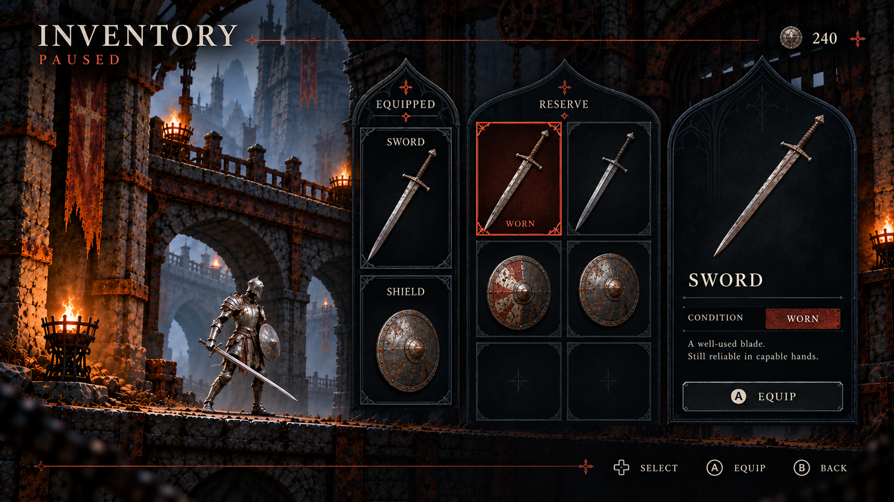
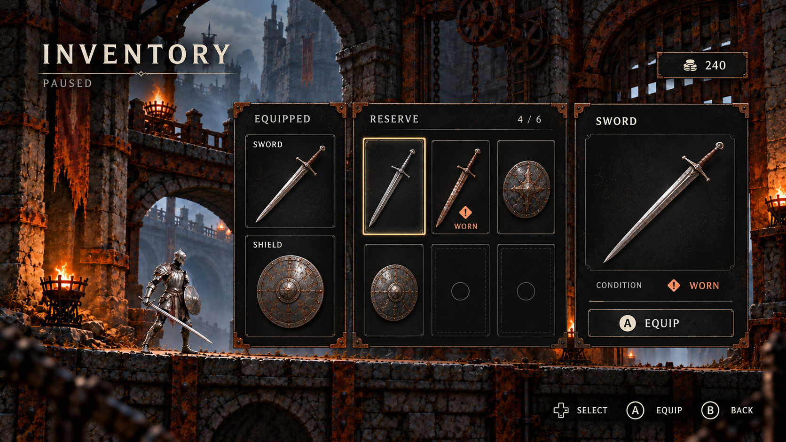
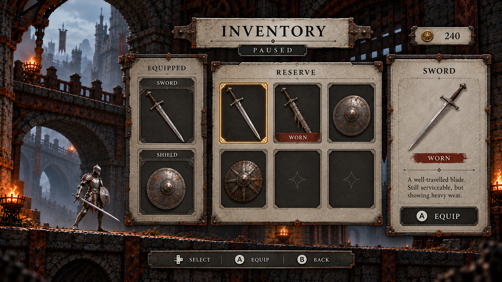
Three matching UI families show pause, equipped gear and reserves. In A/C, the focused sword and WORN detail do not fully agree; state binding must be corrected in implementation. Text, descriptions, slot counts and glyphs remain illustrative.
Date: 2026-10-20. Status: B — Cathedral Tracery selected by the owner on 2026-10-20. Other options are preserved alternatives. Generator: built-in image_gen; three distinct calls. Model version and seeds are not exposed.
Reference 1: selected Lower Gatehouse L02 PNG (world architecture/material/light). Reference 2: original Penitent Harness PNG (protagonist identity when present; world/material compatibility for new enemies). References are preserved in the same project card.
The selected concept is B — Cathedral Tracery. Approval establishes visual direction. Existing gameplay invariants remain authoritative; illustrative UI prices, slot counts, input glyphs, boss dimensions and pose details do not add mechanics. Exact generation prompts below are unchanged.
Three matching UI families show pause, equipped gear and reserves. In A/C, the focused sword and WORN detail do not fully agree; state binding must be corrected in implementation. Text, descriptions, slot counts and glyphs remain illustrative.
Use case: stylized-concept. Create ONE reviewable concept image for a gothic medieval 2.5D metroidvania. Input image 1 is the APPROVED WORLD/MATERIAL/LIGHT reference: Corroded Bastion masonry, riveted corroded iron and L02 Cold Skylight, restrained cool daylight with localized warm braziers. Input image 2 is the APPROVED PROTAGONIST IDENTITY reference, Penitent Harness: lean elongated asymmetric repaired armor, angular chipped slit helmet, fluted breastplate, dark hollow neck/gaps with NO body, straight sword and ROUND buckler. Do not redesign the protagonist. Use references as actual visual guides, not as text to reproduce. These are exploratory raster concepts, not game captures or technical production sheets. Preserve readable large shapes and avoid uniform orange tint, modern machinery, steampunk, neon magic or watermarks. All new designs remain proposals. Use case: ui-mockup. This is a STATIC VISUAL PROPOSAL over the supplied L02 scene, because no game runtime exists. Preserve the exact reference scene, camera, armor identity/position and practical character scale. Do not invent new rooms. Use crisp readable English typography and short labels, realistic screen margins and clear controller focus. Only established health, equipment condition, currency, traversal abilities, reserve inventory and equipment purchases; NO stamina/mana/XP/minimap, repair, upgrades, skills tree or new gameplay system. Sample numbers are illustrative, not game balance. OPTION A — RIVETED IRON. Quiet dark charcoal iron panels, sparse copper-brown corroded corner brackets, pale high-contrast sans-serif text and restrained cream icons. Rectangular economical layout, clear spacing, tiny borders; no dense ornament. ONE complete 16:9 paused-inventory screen. Dim but preserve the same L02 background. Exact heading INVENTORY and visible PAUSED indicator. Left: two equipped slots named SWORD and SHIELD. Center: six generous reserve slots containing two swords, two shields and two empty slots; one worn weapon has a clear WORN state, one currently focused item has a strong frame. Right: concise selected equipment card showing name SWORD, condition WORN and action EQUIP. Resource 240 in header. Distinguish empty slot from unequipped reserve; destroyed gear is absent, not recoverable broken stock. Lower edge input hints SELECT, EQUIP, BACK with neutral controller/keyboard glyphs. No weight limit, crafting, armor stats, repair, health potion or stamina.
Use case: stylized-concept. Create ONE reviewable concept image for a gothic medieval 2.5D metroidvania. Input image 1 is the APPROVED WORLD/MATERIAL/LIGHT reference: Corroded Bastion masonry, riveted corroded iron and L02 Cold Skylight, restrained cool daylight with localized warm braziers. Input image 2 is the APPROVED PROTAGONIST IDENTITY reference, Penitent Harness: lean elongated asymmetric repaired armor, angular chipped slit helmet, fluted breastplate, dark hollow neck/gaps with NO body, straight sword and ROUND buckler. Do not redesign the protagonist. Use references as actual visual guides, not as text to reproduce. These are exploratory raster concepts, not game captures or technical production sheets. Preserve readable large shapes and avoid uniform orange tint, modern machinery, steampunk, neon magic or watermarks. All new designs remain proposals. Use case: ui-mockup. This is a STATIC VISUAL PROPOSAL over the supplied L02 scene, because no game runtime exists. Preserve the exact reference scene, camera, armor identity/position and practical character scale. Do not invent new rooms. Use crisp readable English typography and short labels, realistic screen margins and clear controller focus. Only established health, equipment condition, currency, traversal abilities, reserve inventory and equipment purchases; NO stamina/mana/XP/minimap, repair, upgrades, skills tree or new gameplay system. Sample numbers are illustrative, not game balance. OPTION B — CATHEDRAL TRACERY. Slim pointed-arch corner motifs, dark desaturated blue-black surfaces, pale ivory text, delicate vertical hierarchy and restrained rust-red accents. Medieval Gothic character without ornate frames eating the content. ONE complete 16:9 paused-inventory screen. Dim but preserve the same L02 background. Exact heading INVENTORY and visible PAUSED indicator. Left: two equipped slots named SWORD and SHIELD. Center: six generous reserve slots containing two swords, two shields and two empty slots; one worn weapon has a clear WORN state, one currently focused item has a strong frame. Right: concise selected equipment card showing name SWORD, condition WORN and action EQUIP. Resource 240 in header. Distinguish empty slot from unequipped reserve; destroyed gear is absent, not recoverable broken stock. Lower edge input hints SELECT, EQUIP, BACK with neutral controller/keyboard glyphs. No weight limit, crafting, armor stats, repair, health potion or stamina.
Use case: stylized-concept. Create ONE reviewable concept image for a gothic medieval 2.5D metroidvania. Input image 1 is the APPROVED WORLD/MATERIAL/LIGHT reference: Corroded Bastion masonry, riveted corroded iron and L02 Cold Skylight, restrained cool daylight with localized warm braziers. Input image 2 is the APPROVED PROTAGONIST IDENTITY reference, Penitent Harness: lean elongated asymmetric repaired armor, angular chipped slit helmet, fluted breastplate, dark hollow neck/gaps with NO body, straight sword and ROUND buckler. Do not redesign the protagonist. Use references as actual visual guides, not as text to reproduce. These are exploratory raster concepts, not game captures or technical production sheets. Preserve readable large shapes and avoid uniform orange tint, modern machinery, steampunk, neon magic or watermarks. All new designs remain proposals. Use case: ui-mockup. This is a STATIC VISUAL PROPOSAL over the supplied L02 scene, because no game runtime exists. Preserve the exact reference scene, camera, armor identity/position and practical character scale. Do not invent new rooms. Use crisp readable English typography and short labels, realistic screen margins and clear controller focus. Only established health, equipment condition, currency, traversal abilities, reserve inventory and equipment purchases; NO stamina/mana/XP/minimap, repair, upgrades, skills tree or new gameplay system. Sample numbers are illustrative, not game balance. OPTION C — PALE RELIC SLATES. Light bone-grey engraved tablets framed by a few dark iron fixtures, charcoal readable type and minimal warm oxide accents. Clean broad flat surfaces and strong dark-on-light contrast; no parchment clutter or golden fantasy filigree. ONE complete 16:9 paused-inventory screen. Dim but preserve the same L02 background. Exact heading INVENTORY and visible PAUSED indicator. Left: two equipped slots named SWORD and SHIELD. Center: six generous reserve slots containing two swords, two shields and two empty slots; one worn weapon has a clear WORN state, one currently focused item has a strong frame. Right: concise selected equipment card showing name SWORD, condition WORN and action EQUIP. Resource 240 in header. Distinguish empty slot from unequipped reserve; destroyed gear is absent, not recoverable broken stock. Lower edge input hints SELECT, EQUIP, BACK with neutral controller/keyboard glyphs. No weight limit, crafting, armor stats, repair, health potion or stamina.
Purchasing replacement swords/shields, affordability feedback and equipment going to reserves.
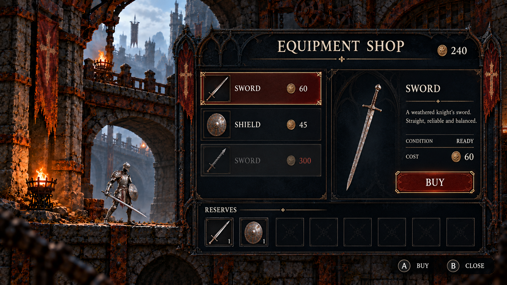
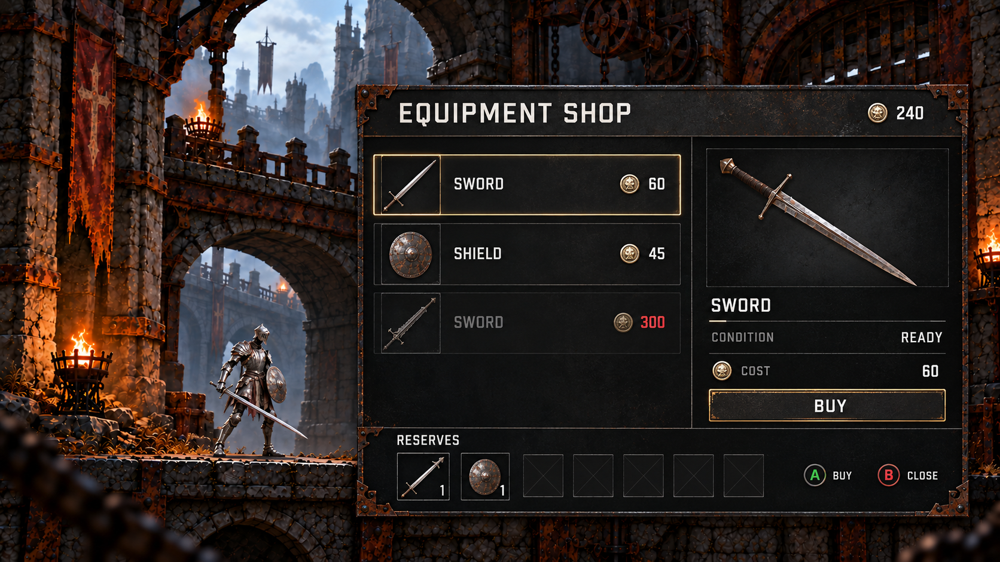
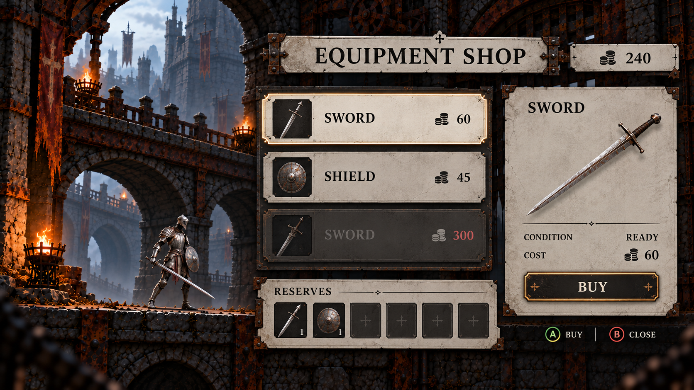
Three UI families show affordable versus unaffordable purchases and reserve stock. Prices, icons, slot counts and button assignments are examples. No repair, selling, upgrades or merchant behavior is added to scope.
Date: 2026-10-20. Status: B — Cathedral Tracery selected by the owner on 2026-10-20. Other options are preserved alternatives. Generator: built-in image_gen; three distinct calls. Model version and seeds are not exposed.
Reference 1: selected Lower Gatehouse L02 PNG (world architecture/material/light). Reference 2: original Penitent Harness PNG (protagonist identity when present; world/material compatibility for new enemies). References are preserved in the same project card.
The selected concept is B — Cathedral Tracery. Approval establishes visual direction. Existing gameplay invariants remain authoritative; illustrative UI prices, slot counts, input glyphs, boss dimensions and pose details do not add mechanics. Exact generation prompts below are unchanged.
Three UI families show affordable versus unaffordable purchases and reserve stock. Prices, icons, slot counts and button assignments are examples. No repair, selling, upgrades or merchant behavior is added to scope.
Use case: stylized-concept. Create ONE reviewable concept image for a gothic medieval 2.5D metroidvania. Input image 1 is the APPROVED WORLD/MATERIAL/LIGHT reference: Corroded Bastion masonry, riveted corroded iron and L02 Cold Skylight, restrained cool daylight with localized warm braziers. Input image 2 is the APPROVED PROTAGONIST IDENTITY reference, Penitent Harness: lean elongated asymmetric repaired armor, angular chipped slit helmet, fluted breastplate, dark hollow neck/gaps with NO body, straight sword and ROUND buckler. Do not redesign the protagonist. Use references as actual visual guides, not as text to reproduce. These are exploratory raster concepts, not game captures or technical production sheets. Preserve readable large shapes and avoid uniform orange tint, modern machinery, steampunk, neon magic or watermarks. All new designs remain proposals. Use case: ui-mockup. This is a STATIC VISUAL PROPOSAL over the supplied L02 scene, because no game runtime exists. Preserve the exact reference scene, camera, armor identity/position and practical character scale. Do not invent new rooms. Use crisp readable English typography and short labels, realistic screen margins and clear controller focus. Only established health, equipment condition, currency, traversal abilities, reserve inventory and equipment purchases; NO stamina/mana/XP/minimap, repair, upgrades, skills tree or new gameplay system. Sample numbers are illustrative, not game balance. OPTION A — RIVETED IRON. Quiet dark charcoal iron panels, sparse copper-brown corroded corner brackets, pale high-contrast sans-serif text and restrained cream icons. Rectangular economical layout, clear spacing, tiny borders; no dense ornament. ONE complete 16:9 equipment-purchase screen over the dimmed same L02 background. Heading EQUIPMENT SHOP. Illustrative resource balance 240. Main list contains SWORD 60, SHIELD 45 and a more expensive SWORD 300; the unaffordable 300 option is visibly disabled, the 60 sword currently focused. Right pane shows the selected straight sword, condition READY, cost 60 and clearly enabled BUY button. Bottom shows a small reserve inventory strip receiving purchased equipment, labelled RESERVES, with sword/shield icons and empty slots. Use short exact labels BUY and CLOSE and readable focus/input hints. No selling, repair, upgrades, debt, purchase animation or merchant portrait. Prices are example UI content, not balance decisions.
Use case: stylized-concept. Create ONE reviewable concept image for a gothic medieval 2.5D metroidvania. Input image 1 is the APPROVED WORLD/MATERIAL/LIGHT reference: Corroded Bastion masonry, riveted corroded iron and L02 Cold Skylight, restrained cool daylight with localized warm braziers. Input image 2 is the APPROVED PROTAGONIST IDENTITY reference, Penitent Harness: lean elongated asymmetric repaired armor, angular chipped slit helmet, fluted breastplate, dark hollow neck/gaps with NO body, straight sword and ROUND buckler. Do not redesign the protagonist. Use references as actual visual guides, not as text to reproduce. These are exploratory raster concepts, not game captures or technical production sheets. Preserve readable large shapes and avoid uniform orange tint, modern machinery, steampunk, neon magic or watermarks. All new designs remain proposals. Use case: ui-mockup. This is a STATIC VISUAL PROPOSAL over the supplied L02 scene, because no game runtime exists. Preserve the exact reference scene, camera, armor identity/position and practical character scale. Do not invent new rooms. Use crisp readable English typography and short labels, realistic screen margins and clear controller focus. Only established health, equipment condition, currency, traversal abilities, reserve inventory and equipment purchases; NO stamina/mana/XP/minimap, repair, upgrades, skills tree or new gameplay system. Sample numbers are illustrative, not game balance. OPTION B — CATHEDRAL TRACERY. Slim pointed-arch corner motifs, dark desaturated blue-black surfaces, pale ivory text, delicate vertical hierarchy and restrained rust-red accents. Medieval Gothic character without ornate frames eating the content. ONE complete 16:9 equipment-purchase screen over the dimmed same L02 background. Heading EQUIPMENT SHOP. Illustrative resource balance 240. Main list contains SWORD 60, SHIELD 45 and a more expensive SWORD 300; the unaffordable 300 option is visibly disabled, the 60 sword currently focused. Right pane shows the selected straight sword, condition READY, cost 60 and clearly enabled BUY button. Bottom shows a small reserve inventory strip receiving purchased equipment, labelled RESERVES, with sword/shield icons and empty slots. Use short exact labels BUY and CLOSE and readable focus/input hints. No selling, repair, upgrades, debt, purchase animation or merchant portrait. Prices are example UI content, not balance decisions.
Use case: stylized-concept. Create ONE reviewable concept image for a gothic medieval 2.5D metroidvania. Input image 1 is the APPROVED WORLD/MATERIAL/LIGHT reference: Corroded Bastion masonry, riveted corroded iron and L02 Cold Skylight, restrained cool daylight with localized warm braziers. Input image 2 is the APPROVED PROTAGONIST IDENTITY reference, Penitent Harness: lean elongated asymmetric repaired armor, angular chipped slit helmet, fluted breastplate, dark hollow neck/gaps with NO body, straight sword and ROUND buckler. Do not redesign the protagonist. Use references as actual visual guides, not as text to reproduce. These are exploratory raster concepts, not game captures or technical production sheets. Preserve readable large shapes and avoid uniform orange tint, modern machinery, steampunk, neon magic or watermarks. All new designs remain proposals. Use case: ui-mockup. This is a STATIC VISUAL PROPOSAL over the supplied L02 scene, because no game runtime exists. Preserve the exact reference scene, camera, armor identity/position and practical character scale. Do not invent new rooms. Use crisp readable English typography and short labels, realistic screen margins and clear controller focus. Only established health, equipment condition, currency, traversal abilities, reserve inventory and equipment purchases; NO stamina/mana/XP/minimap, repair, upgrades, skills tree or new gameplay system. Sample numbers are illustrative, not game balance. OPTION C — PALE RELIC SLATES. Light bone-grey engraved tablets framed by a few dark iron fixtures, charcoal readable type and minimal warm oxide accents. Clean broad flat surfaces and strong dark-on-light contrast; no parchment clutter or golden fantasy filigree. ONE complete 16:9 equipment-purchase screen over the dimmed same L02 background. Heading EQUIPMENT SHOP. Illustrative resource balance 240. Main list contains SWORD 60, SHIELD 45 and a more expensive SWORD 300; the unaffordable 300 option is visibly disabled, the 60 sword currently focused. Right pane shows the selected straight sword, condition READY, cost 60 and clearly enabled BUY button. Bottom shows a small reserve inventory strip receiving purchased equipment, labelled RESERVES, with sword/shield icons and empty slots. Use short exact labels BUY and CLOSE and readable focus/input hints. No selling, repair, upgrades, debt, purchase animation or merchant portrait. Prices are example UI content, not balance decisions.
The owner reported that the armor blends into the environment. These five edits keep the room and Penitent Harness identity while varying contrast, light and background detail. The owner selected L02 — Cold Skylight; other treatments remain available for comparison.
In Art collection, expand the combined-scene family and use Compare to switch between L01-L05 and the original, either with the divider or side by side.
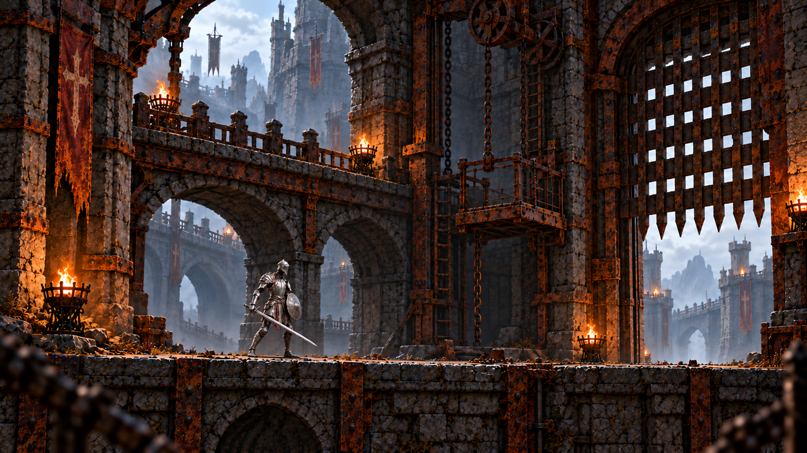
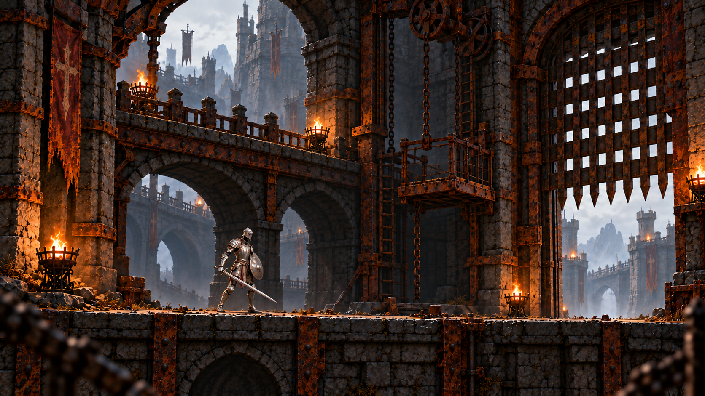
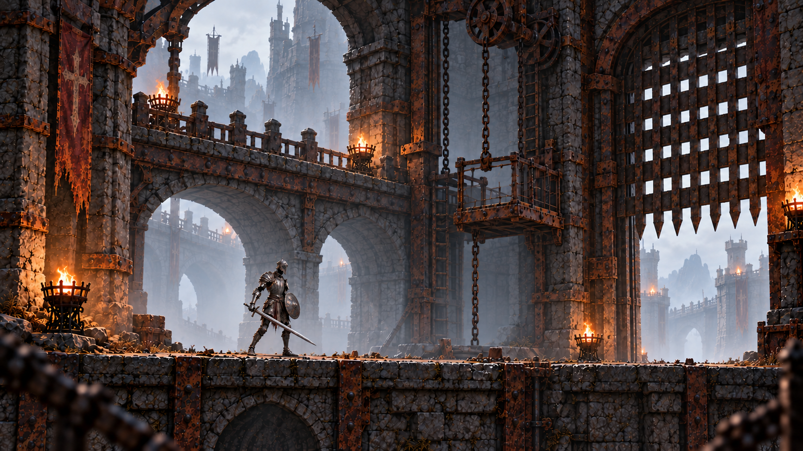
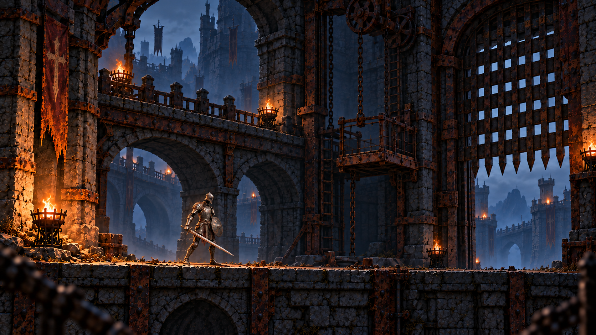
Owner selection: L02 — Cold Skylight. Earlier agent observations are retained in the prompt record; L01/L03/L04/L05 are comparison alternatives.
Date: 2026-10-20. Status: L02 — Cold Skylight selected by the owner on 2026-10-20; the other treatments are preserved comparison alternatives. Generator: built-in image_gen; one edit call per variation. Exact model version and seed are not exposed.
The owner reported that the protagonist blends into the environment and requested the recommended correction plus four alternatives. All five use the same Lower Gatehouse PNG as the actual edit target, plus the original Penitent Harness board as the character-identity reference. The scene, camera, character scale, armor construction, hollow neck, straight sword and round buckler are preserved. Treatments vary value separation, light temperature, atmospheric depth and surface-detail density.
The selected environment B and protagonist P03 remain confirmed. L02 — Cold Skylight is now the approved lighting/visibility reference (VIS03). This is visual concept review, not proof of dynamic lighting or visibility in an implemented game.
| Candidate | Agent observation |
|---|---|
| L01 — Balanced Steel | A modest increase in steel brightness and quieter lower masonry. Keeps the warm daylight balance; differences from L02 are subtle. |
| L02 — Cold Skylight | Cooler silver highlights and sky balance, with localized rust. The change is restrained rather than a strong blue lighting treatment. |
| L03 — Mist Silhouette | The clearest dark silhouette against lighter mist across the lower background. The larger atmospheric change is a tradeoff to review. |
| L04 — Warm Firelight | Blue evening shadows with amber fire reflections. Warm armor edges separate from the cool fortress, while some leg shadows stay deep. |
| L05 — Quiet Materials | Broader masonry shapes and less small surface noise, paired with clearer steel highlights. A material/detail hierarchy alternative. |
Historical agent preference was L03 for immediate silhouette separation and L05 for quieter materials. The owner selected L02 — Cold Skylight; that selection is authoritative. Exact generation prompts below are unchanged.
A modest increase in steel brightness and quieter lower masonry. Keeps the warm daylight balance; differences from L02 are subtle.
Use case: lighting-weather with identity preservation.
Asset type: one full landscape 16:9 gameplay concept, one of five comparative visibility treatments of the SAME Lower Gatehouse scene for a gothic medieval 2.5D metroidvania.
Input roles: Image 1 is the scene EDIT TARGET: preserve its room, architecture, portcullis, lift, raised walkway, camera, framing and character position/scale. Image 2 is the exact Penitent Harness CHARACTER IDENTITY reference: its three figures are views of the same empty suit, not extra characters.
Primary request: Improve player-character readability at actual gameplay scale. The original armor blends into equally dark, busy rust and stone. Apply the specific treatment below; make the separation clearly visible at a thumbnail size.
Invariants: EXACT same Penitent Harness armor design, lean elongated silhouette, asymmetric mismatched pauldrons, fluted breastplate, pointed angular chipped slit helmet, black HOLLOW neck and gaps without any human body, repaired plate and torn brown-burgundy waist cloth. Same straight sword and ROUND buckler. Preserve full-body character on the same lower walkway at the same game scale; no close-up and no enlarging it to solve contrast. One protagonist only. Keep medieval iron with localized rust, pitting and worn edges; do not make it pristine chrome, gold armor or a new costume.
Open the pose only slightly so sword, shield and limbs do not merge into the torso, without changing the movement plane or identity. Give the character crisp local edges and a coherent contact shadow; simplify distracting background detail along the entire walkable lower lane so visibility does not depend on a localized halo around the hero.
Keep the Corroded Bastion architectural/material language, tactile stone and corroded iron, warm braziers, atmospheric fortress depth and mildly perspective side-view gameplay composition. No magical glow, luminous outline, artificial spotlight following the hero, HUD, text, labels, collage, panel grid or watermark.
Specific treatment: L01 — BALANCED STEEL, the recommended baseline correction. Make the existing steel plates visibly lighter, a restrained silver-blue grey with broad soft readable highlights. Keep orange rust only at joints, rivets and repairs. Apply a gentle cool skylight rim on helmet, shoulder and legs. Darken and quiet the masonry directly behind the full lower movement plane, reduce its small noisy detail without removing the gatehouse. Preserve warm fire pools and the original overall time of day. Establish clear light-armored-character / quieter darker-background value separation while retaining a natural grounded look. No bright-blue armor and no halo.
Cooler silver highlights and sky balance, with localized rust. The change is restrained rather than a strong blue lighting treatment.
Use case: lighting-weather with identity preservation.
Asset type: one full landscape 16:9 gameplay concept, one of five comparative visibility treatments of the SAME Lower Gatehouse scene for a gothic medieval 2.5D metroidvania.
Input roles: Image 1 is the scene EDIT TARGET: preserve its room, architecture, portcullis, lift, raised walkway, camera, framing and character position/scale. Image 2 is the exact Penitent Harness CHARACTER IDENTITY reference: its three figures are views of the same empty suit, not extra characters.
Primary request: Improve player-character readability at actual gameplay scale. The original armor blends into equally dark, busy rust and stone. Apply the specific treatment below; make the separation clearly visible at a thumbnail size.
Invariants: EXACT same Penitent Harness armor design, lean elongated silhouette, asymmetric mismatched pauldrons, fluted breastplate, pointed angular chipped slit helmet, black HOLLOW neck and gaps without any human body, repaired plate and torn brown-burgundy waist cloth. Same straight sword and ROUND buckler. Preserve full-body character on the same lower walkway at the same game scale; no close-up and no enlarging it to solve contrast. One protagonist only. Keep medieval iron with localized rust, pitting and worn edges; do not make it pristine chrome, gold armor or a new costume.
Open the pose only slightly so sword, shield and limbs do not merge into the torso, without changing the movement plane or identity. Give the character crisp local edges and a coherent contact shadow; simplify distracting background detail along the entire walkable lower lane so visibility does not depend on a localized halo around the hero.
Keep the Corroded Bastion architectural/material language, tactile stone and corroded iron, warm braziers, atmospheric fortress depth and mildly perspective side-view gameplay composition. No magical glow, luminous outline, artificial spotlight following the hero, HUD, text, labels, collage, panel grid or watermark.
Specific treatment: L02 — COLD SKYLIGHT. A clearly distinct COOL directional-light solution: open-sky daylight from upper left illuminates the helmet, breastplate, pauldrons and leg plates in pale blue-grey SILVER. Make the character substantially brighter and cooler than the warm dark stone/iron at the playable plane. Keep rust localized in creases. Add a narrow realistic sky reflection along the silhouette, no emissive outline. Maintain the warm braziers as small secondary pools. Subdue and darken small details on the lower arch piers and distant masonry; the gatehouse architecture remains visible. The result should have a conspicuous cool-steel protagonist against the warm rusted fortress, without changing armor design or putting a human inside.
The clearest dark silhouette against lighter mist across the lower background. The larger atmospheric change is a tradeoff to review.
Use case: lighting-weather with identity preservation.
Asset type: one full landscape 16:9 gameplay concept, one of five comparative visibility treatments of the SAME Lower Gatehouse scene for a gothic medieval 2.5D metroidvania.
Input roles: Image 1 is the scene EDIT TARGET: preserve its room, architecture, portcullis, lift, raised walkway, camera, framing and character position/scale. Image 2 is the exact Penitent Harness CHARACTER IDENTITY reference: its three figures are views of the same empty suit, not extra characters.
Primary request: Improve player-character readability at actual gameplay scale. The original armor blends into equally dark, busy rust and stone. Apply the specific treatment below; make the separation clearly visible at a thumbnail size.
Invariants: EXACT same Penitent Harness armor design, lean elongated silhouette, asymmetric mismatched pauldrons, fluted breastplate, pointed angular chipped slit helmet, black HOLLOW neck and gaps without any human body, repaired plate and torn brown-burgundy waist cloth. Same straight sword and ROUND buckler. Preserve full-body character on the same lower walkway at the same game scale; no close-up and no enlarging it to solve contrast. One protagonist only. Keep medieval iron with localized rust, pitting and worn edges; do not make it pristine chrome, gold armor or a new costume.
Open the pose only slightly so sword, shield and limbs do not merge into the torso, without changing the movement plane or identity. Give the character crisp local edges and a coherent contact shadow; simplify distracting background detail along the entire walkable lower lane so visibility does not depend on a localized halo around the hero.
Keep the Corroded Bastion architectural/material language, tactile stone and corroded iron, warm braziers, atmospheric fortress depth and mildly perspective side-view gameplay composition. No magical glow, luminous outline, artificial spotlight following the hero, HUD, text, labels, collage, panel grid or watermark.
Specific treatment: L03 — MIST SILHOUETTE. Test the OPPOSITE VALUE STRUCTURE to a bright hero on a dark wall. Retain the armor as dark oxidized neutral gunmetal, with just narrow silver worn edges. Introduce a broad, clearly visible pale cool-grey veil of atmospheric mist throughout the ARCHWAYS and distant architecture along the entire lower gameplay route, including behind the protagonist's full silhouette. This is world-space fortress air and depth haze, not a spotlight or a halo. Reduce and lift the contrast of the lower background masonry so the helmet, torso, legs and round buckler read as a clean dark silhouette against lighter space. Preserve the foreground walking surface and supporting arch piers; architectural silhouettes and gate remain at their exact locations. The scene should feel colder and mistier overall than the target, while nearby braziers remain warm. Do not brighten the armor globally; the visual mechanism is DARK CHARACTER AGAINST LIGHTER QUIET BACKGROUND. Preserve all character identity details and visible black hollow neck.
Blue evening shadows with amber fire reflections. Warm armor edges separate from the cool fortress, while some leg shadows stay deep.
Use case: lighting-weather with identity preservation.
Asset type: one full landscape 16:9 gameplay concept, one of five comparative visibility treatments of the SAME Lower Gatehouse scene for a gothic medieval 2.5D metroidvania.
Input roles: Image 1 is the scene EDIT TARGET: preserve its room, architecture, portcullis, lift, raised walkway, camera, framing and character position/scale. Image 2 is the exact Penitent Harness CHARACTER IDENTITY reference: its three figures are views of the same empty suit, not extra characters.
Primary request: Improve player-character readability at actual gameplay scale. The original armor blends into equally dark, busy rust and stone. Apply the specific treatment below; make the separation clearly visible at a thumbnail size.
Invariants: EXACT same Penitent Harness armor design, lean elongated silhouette, asymmetric mismatched pauldrons, fluted breastplate, pointed angular chipped slit helmet, black HOLLOW neck and gaps without any human body, repaired plate and torn brown-burgundy waist cloth. Same straight sword and ROUND buckler. Preserve full-body character on the same lower walkway at the same game scale; no close-up and no enlarging it to solve contrast. One protagonist only. Keep medieval iron with localized rust, pitting and worn edges; do not make it pristine chrome, gold armor or a new costume.
Open the pose only slightly so sword, shield and limbs do not merge into the torso, without changing the movement plane or identity. Give the character crisp local edges and a coherent contact shadow; simplify distracting background detail along the entire walkable lower lane so visibility does not depend on a localized halo around the hero.
Keep the Corroded Bastion architectural/material language, tactile stone and corroded iron, warm braziers, atmospheric fortress depth and mildly perspective side-view gameplay composition. No magical glow, luminous outline, artificial spotlight following the hero, HUD, text, labels, collage, panel grid or watermark.
Specific treatment: L04 — WARM FIRELIGHT / COOL SHADOWS. A clearly different lighting balance: let the gatehouse, lower background piers and distant fortress fall into restrained cool slate-blue evening shadow, desaturating their orange-brown microdetail while retaining real rust. The existing LEFT BRAZIER supplies a stronger broad warm cream-amber KEY REFLECTION on the protagonist's helmet, chest, sword arm and legs, catching the plate surfaces as readable warm silver. Keep the actual steel material silver iron, not gold or bronze. Warm-lit readable protagonist against cool low-contrast architectural shadow. The flame itself remains localized and the character is not luminous. Give the round buckler and sword distinct light edges. Maintain the original camera and all geometry/prop positions, hollow empty armor identity and same practical character scale. This option should look visibly more firelit and cooler in the surrounding shadows than the neutral daylight baseline.
Broader masonry shapes and less small surface noise, paired with clearer steel highlights. A material/detail hierarchy alternative.
Use case: lighting-weather with identity preservation.
Asset type: one full landscape 16:9 gameplay concept, one of five comparative visibility treatments of the SAME Lower Gatehouse scene for a gothic medieval 2.5D metroidvania.
Input roles: Image 1 is the scene EDIT TARGET: preserve its room, architecture, portcullis, lift, raised walkway, camera, framing and character position/scale. Image 2 is the exact Penitent Harness CHARACTER IDENTITY reference: its three figures are views of the same empty suit, not extra characters.
Primary request: Improve player-character readability at actual gameplay scale. The original armor blends into equally dark, busy rust and stone. Apply the specific treatment below; make the separation clearly visible at a thumbnail size.
Invariants: EXACT same Penitent Harness armor design, lean elongated silhouette, asymmetric mismatched pauldrons, fluted breastplate, pointed angular chipped slit helmet, black HOLLOW neck and gaps without any human body, repaired plate and torn brown-burgundy waist cloth. Same straight sword and ROUND buckler. Preserve full-body character on the same lower walkway at the same game scale; no close-up and no enlarging it to solve contrast. One protagonist only. Keep medieval iron with localized rust, pitting and worn edges; do not make it pristine chrome, gold armor or a new costume.
Open the pose only slightly so sword, shield and limbs do not merge into the torso, without changing the movement plane or identity. Give the character crisp local edges and a coherent contact shadow; simplify distracting background detail along the entire walkable lower lane so visibility does not depend on a localized halo around the hero.
Keep the Corroded Bastion architectural/material language, tactile stone and corroded iron, warm braziers, atmospheric fortress depth and mildly perspective side-view gameplay composition. No magical glow, luminous outline, artificial spotlight following the hero, HUD, text, labels, collage, panel grid or watermark.
Specific treatment: L05 — QUIET MATERIALS / GRAPHIC READABILITY. This is the strongest MATERIAL AND DETAIL-HIERARCHY solution rather than a weather change. Keep neutral overcast daylight. Render the same character with broad matte-satin PALE GREY STEEL plate surfaces and a few crisp silver edge highlights; concentrate weathering in a small number of readable dark rusty seams. Keep the existing fluting, angular helmet, asymmetric plates and exact round buckler. Reduce the armor's tiny speckled noise, not its design. Across the ENTIRE architectural backdrop, suppress fine brick noise, rust freckles and tiny bright edges; group masonry into broad, dark desaturated warm-grey value masses. Keep gate/lift/arches in their exact places and retain readable large rust patches. The foreground playable floor remains crisp but subordinate to the hero. A legible sprite-like figure should stand out against subdued broader-shape background rendering even at small image size. Keep realistic materials and gothic mood, not cel shading or cartoon outlines. This option should have visibly quieter, less phototextured backgrounds and the palest neutral armor of the set, without luminous white emission or a halo.
A different room using B — Corroded Bastion and P03 — Penitent Harness. The two directions are confirmed. This original scene is the baseline that received visibility feedback; its specific layout remains a proposal. Original gatehouse prompt record.
The initial composition used a generic rounded helmet and angular shield. The targeted correction restored the chosen Penitent Harness identity; this draft is preserved for traceability.
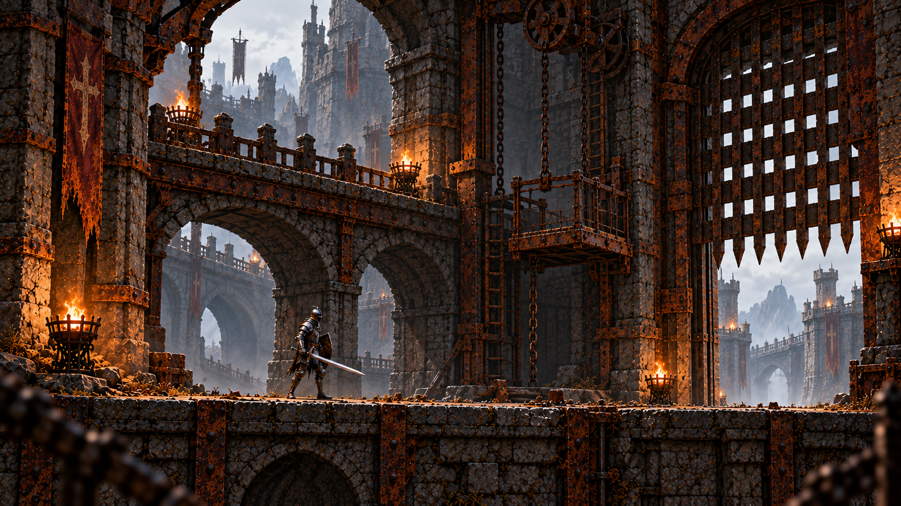
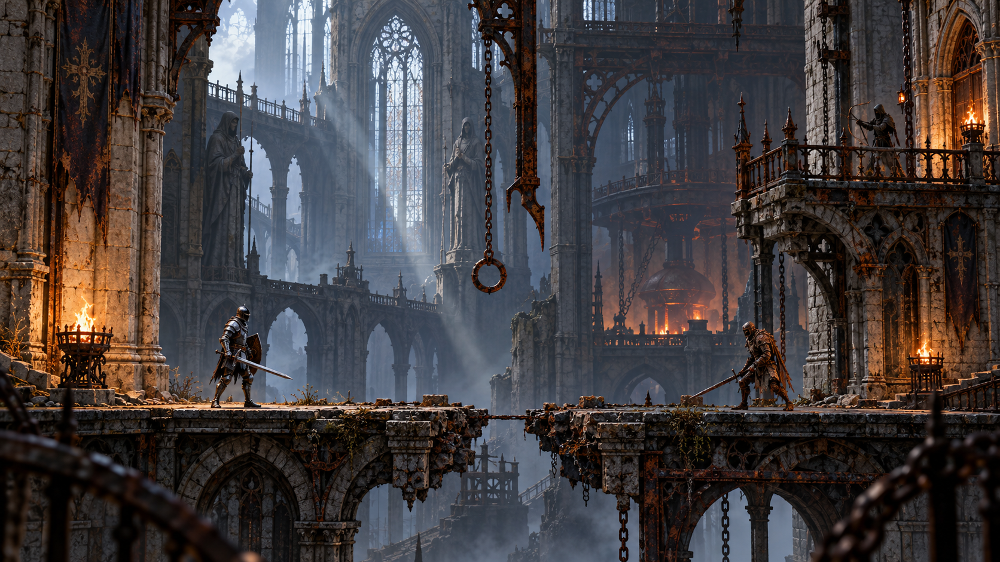
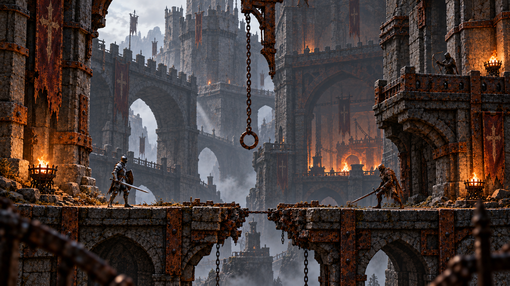
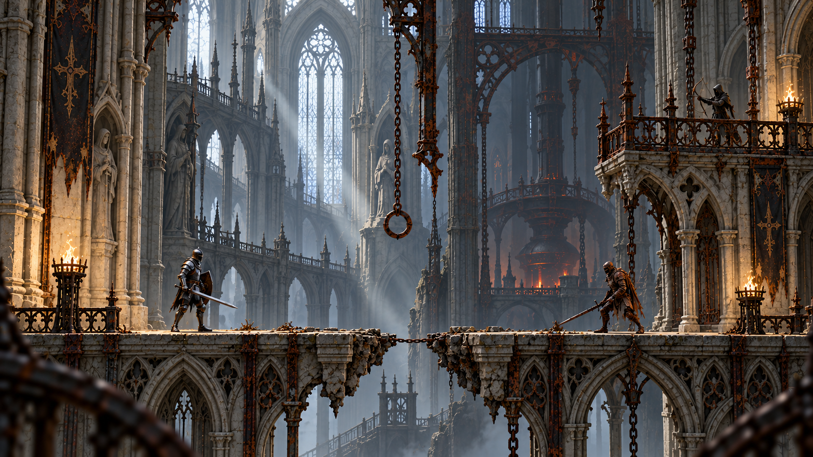
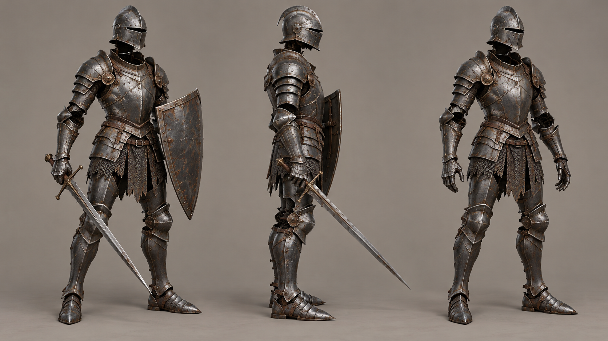
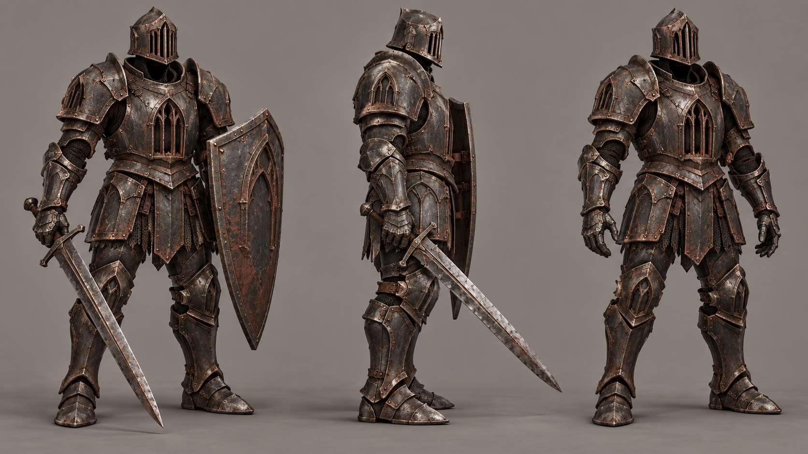
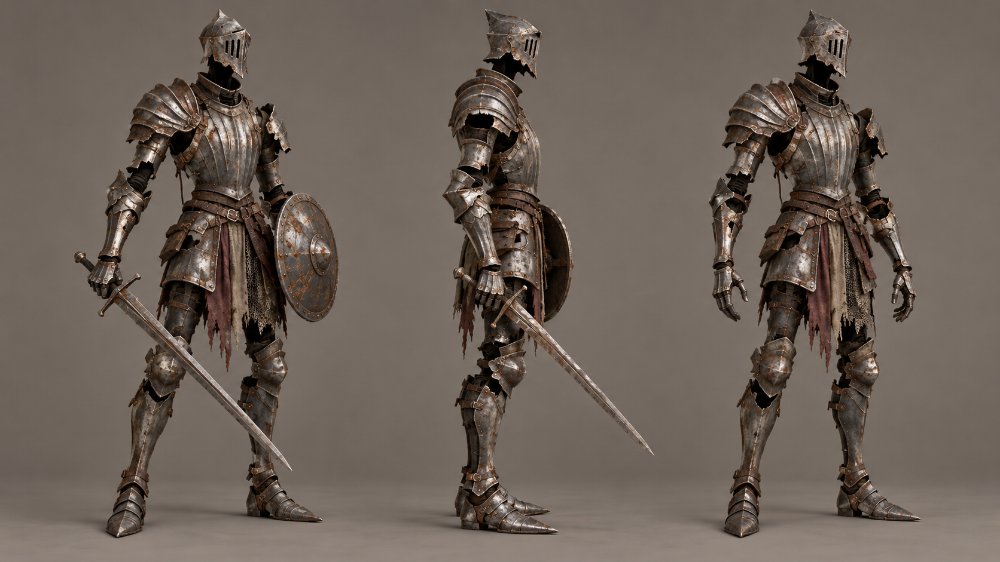
Working descriptor, not a final game title. Interview date: 2026-10-20.
Status: the owner confirmed the consolidated scope on 2026-10-20 by selecting option A in the final review. The requirements interview and visual selections are complete. The first rendering/runtime proof is implemented and agent-verified; physical input playtesting and human visual review remain pending. The complete prototype and visual editor are not implemented.
Prove a custom Rust engine through a playable Windows metroidvania prototype and its visual authoring tools. The engine owns rendering and game systems, with libraries providing windowing, GPU access, physics and audio.
This is a new project. Its setting, decisions and implementation are independent of the existing Gothic Platformer and Game UI Editor projects.
All decisions below were confirmed during the 2026-10-20 interview. They describe requested behavior, not implemented or validated functionality.
| ID | Confirmed decision |
|---|---|
| D01 | The primary objective is a functioning custom engine. Rust is mandatory; the first target is Windows. |
| D02 | Build our own renderer and game systems, reusing libraries for windowing, GPU access, physics and audio. |
| D03 | The game is a gothic medieval fantasy metroidvania, with rust as its central theme. |
| D04 | Use Bloodstained: Ritual of the Night as a reference for composition: 3D environments, side-on movement, and sprites for characters and selected scenery details. |
| D05 | Use a side-following camera with mild perspective. |
| D06 | Generate character sprites and animations from 3D models in Blender. The engine imports the resulting assets; sprite generation belongs to the external production pipeline. |
| D07 | The first delivery uses simple models while exercising the real model-to-sprite pipeline. |
| D08 | Dynamic lights, including torches, affect both environments and character sprites. |
| D09 | The protagonist is an empty suit of armor animated by an unknown presence. |
| D10 | The playable area is a fortress and cathedral overtaken by rust. |
| D11 | The objective is to reignite a protective forge during exploration. Doing so transforms routes and opens access to the boss. |
| D12 | Rust contributes to atmosphere and story, and also deteriorates equipment and environments. It is not a player rust-power mechanic. |
| D13 | Equipment corrosion comes from contact with corrosive enemies and environments, rather than ordinary weapon use. |
| D14 | Corrosion can permanently destroy weapons and shields within the current play session. Traversal abilities remain available. |
| D15 | Environmental changes occur at defined story events, rather than through continuously simulated corrosion. |
| D16 | Start with a sword and shield. The initial combat set is one sword attack, blocking, parrying and dodging. |
| D17 | Combat has no stamina meter; animation timing provides the commitment to actions. |
| D18 | Unarmed combat remains available after equipment loss. Replacement equipment is purchased at safe points with resources earned in combat. |
| D19 | Common enemies respawn when resting and can be defeated unarmed to regain purchasing resources. |
| D20 | Purchased equipment goes into an inventory, allowing reserves and manual equipment changes. Opening the inventory pauses gameplay. |
| D21 | Death returns the player to the last safe point while retaining traversal abilities, equipment state and currency. Destruction is not undone by death. |
| D22 | Player progression exists only during the running session. Closing the game does not preserve that run. Authored maps and graphs are saved separately as project assets. |
| D23 | The playable prototype contains 8-12 rooms, two common enemy types and one boss. |
| D24 | The common enemies are a corroded swordsman and an archer. |
| D25 | Unlock all three traversal abilities in this order: double jump, horizontal dash, then grappling hook. |
| D26 | The grappling hook pulls the player toward fixed anchor points, rather than supporting rope swinging. |
| D27 | Support keyboard, mouse and game controller in the prototype. |
| D28 | Include a custom visual editor for rooms, objects, simple events, map saving/loading and playtesting. |
| D29 | The editor includes visual programming blocks for room events, enemy behavior, and protagonist movement and combat. |
These are implementation requirements derived from the confirmed decisions, to be checked during implementation:
This section is a proposal, not an additional set of owner-confirmed technology decisions.
wgpu and winit for graphics access and windowing, egui for editor panels, and existing physics/audio libraries. Exact dependencies and versions are selected during technical setup.These are implementation stages of the agreed scope. The first technical proof does not replace the complete prototype.
The owner approved this consolidated specification as the prototype scope. All 29 recorded decisions remain confirmed. The technical approach and delivery sequence remain implementation proposals; the approval closed the requirements interview.
The first rendering/runtime proof now lives in runtime/, an isolated Rust crate inside this repository. It uses locked wgpu 26.0.1 and stable winit 0.30.13 dependencies. These are implementation choices, not additional owner-confirmed design decisions. The final game title, detailed room layout, boss behavior, complete block catalog, combat/economy tuning and a separate implementation repository remain open implementation/design work.
The next technical milestone is visual room/graph authoring through this same runtime, including validated save/reload and isolated playtest state. The first proof provides a custom renderer, one 3D room, a genuinely Blender-generated animated sprite with dynamic light, planar collision, following camera, common input actions and an executable movement graph. It does not substitute for the complete approved prototype.
The first scene exploration contains three generated directions: A, Iron Cathedral; B, Corroded Bastion; and C, Sepulchral Forge. Camera and gameplay composition are kept broadly consistent while architecture, corrosion and lighting vary.
The protagonist exploration adds three empty-armor concepts: P01, Hollow Sentinel; P02, Reliquary Warden; and P03, Penitent Harness. Each board includes equipped, side and unarmed views. On 2026-10-20 the owner selected B — Corroded Bastion as the environment direction and P03 — Penitent Harness as the protagonist direction.
| ID | Confirmed visual direction |
|---|---|
| VIS01 | B — Corroded Bastion: heavy fortress masonry, broad arches, riveted corroded iron, overcast light and localized warm fire. Use this architectural/material language in new rooms. |
| VIS02 | P03 — Penitent Harness: lean asymmetric repaired empty armor, angular damaged helmet, visible hollow neck/gaps, straight sword and round buckler. |
| VIS03 | L02 — Cold Skylight: the selected combined-scene lighting/visibility reference, with cooler silver highlights and localized rust. Preserve the image as the current reference; the technical runtime proxy does not establish a match to this approved appearance. |
These three visual decisions supplement the 29 gameplay/engine decisions above; those original requirements are unchanged.
A new Lower Gatehouse concept combines both selected references in a different room with a portcullis, chain lift and raised gallery. The original scene is retained as the baseline for the selected L02 treatment. Its specific room layout and mechanisms are not additional confirmed gameplay scope. The first take was superseded after a protagonist-identity correction and is retained for traceability.
The owner subsequently reported that the protagonist blends into the environment. A five-image visibility study applies the recommended correction plus four alternatives: L01 Balanced Steel, L02 Cold Skylight, L03 Mist Silhouette, L04 Warm Firelight and L05 Quiet Materials. Each is an edit of the same scene with the original Penitent Harness board as an identity reference. The owner selected L02 — Cold Skylight as the final lighting/visibility treatment on 2026-10-20, recorded as VIS03. VIS01 and VIS02 are unchanged. The original scene and earlier draft remain preserved.
The PNG originals and prompts are preserved in the project's Workspace card. These concepts guide visual review. The first Blender-to-sprite/runtime proof is now implemented and separately verified; its simple models and room blockout are technical proxies, not replacements for these accepted references.
The owner authorized all remaining suggested image concepts, with three distinct options each. The batch contains 27 new PNGs in nine groups: rust/material language, forge before/after, swordsman, archer, boss, exploration signals, HUD, paused reserve inventory and equipment shop. The owner confirmed all nine choices: HUD B, inventory B, shop B, swordsman B, archer B, boss C, materials B, forge C and exploration B. The approved B/P03/L02 direction and original gameplay scope remain unchanged.
Batch index and original images. Each group has exact prompts, three comparative previews and original downloads in the existing Workspace card.
The selected boss appearance and the selected visual languages are approved. Exact boss dimensions/behavior, UI prices, slot counts, currency symbols and input glyphs remain illustrative rather than confirmed implementation rules. Some generated details need refinement after selection; the card records observed issues. This art batch produced image references. The later Blender-to-sprite proof does not implement the selected HUD, inventory, shop or boss behavior.
| ID | Group | Selected direction |
|---|---|---|
| VIS04 | Rust and material language | B — Pitted cavities |
| VIS05 | Forge before and after | C — Circular anvil and passage |
| VIS06 | Corroded swordsman | B — Hunched Mail Veteran |
| VIS07 | Corroded archer | B — Mantled Wall Hunter |
| VIS08 | Fortress boss proposals | C — Ashbound Colossus |
| VIS09 | Exploration and safety signals | B — Gothic stone insets |
| VIS10 | Essential gameplay HUD | B — Cathedral Tracery |
| VIS11 | Paused reserve inventory | B — Cathedral Tracery |
| VIS12 | Replacement equipment shop | B — Cathedral Tracery |
These selections establish appearance. Existing gameplay rules remain authoritative: material B does not add player-armor destruction; exploration B does not add swinging; UI slot counts, prices and input glyphs are illustrative; boss C selects appearance while exact scale and combat behavior still require design and production.
The continuation request started the first technical milestone. Sources, build commands, controls, asset format and limitations are in runtime/README.md. Review the native GPU evidence and video in the existing Workspace card.
Implemented: one 3D blockout room; custom Rust rendering; an editable simple Blender armor source with Idle/Walk atlases and linear world normals; torch lighting affecting both geometry and sprite; side-following perspective camera; fixed-step planar collision; common keyboard/mouse/controller actions; and a bounded JSON control-flow graph. Reconnecting a graph branch demonstrably removes jumping without changing native code.
Agent verification: six focused tests passed; the saved Blender source reopened and passed 20 support-pose/root/loop checks; a matched light comparison changed 3,711 sprite pixels independently of background changes; and a native Windows window presented 120 frames and closed normally. Captures used Windows 11 Pro, RTX 5080, DX12 and 1280×720. The eight-second replay uses synthetic actions and the same renderer as the native window. It is not a performance benchmark or physical input playtest.
Pending: owner visual review and physical keyboard/mouse/controller testing. The model, animations and room remain simple technical proxies. No shadows or sprite depth are implemented. The complete game and visual editor remain future milestones; all 41 confirmed design/visual decisions and approved images are preserved.
Date: 2026-10-20. Current status: B — Corroded Bastion selected by the owner on 2026-10-20. A and C are preserved alternatives. Exact generation prompts below are unchanged.
Delivered originals: three PNG images, each 1672 x 941 pixels. The complete images are preserved without resizing.
Generator: built-in image_gen, via the imagegen skill. Exact model version, seed and provider request ID are not exposed by this integration. Three separate tool calls produced the three images. A was generated from text; B and C used A as a composition reference.
Output: scene-a-iron-cathedral-v01.png.
Input: text only.
Use case: stylized-concept.
Asset type: first visual-foundation concept for a new gothic medieval fantasy 2.5D metroidvania.
Deliver ONE finished full-frame 16:9 landscape gameplay-view concept, not a collage or concept sheet. Target wide 2048x1152 composition.
Camera/layout locked for comparison across three independent directions: camera looks sideways at the playable lane, with mild perspective revealing depth in the 3D environment. No isometric angle, no cinematic low angle. Horizontal floor at about 78% image height; raised landing on the far right at 57% height. A small broken span interrupts the lower floor near the middle; a chain-ring grappling anchor hangs above that gap. The upper right landing is supported by clear medieval stone and iron construction. Readable platform edges.
At x=24% an EMPTY animated medieval suit of armor faces right, full-body, carrying a straight sword and a simple shield; about 15% of image height, plausible gameplay scale. Darkness visible inside helmet and armor gaps; no human face or exposed skin. Make the character read as a crisp pre-rendered 3D sprite integrated into the 3D scene. At x=73% a corroded swordsman stands on the lower floor; a small archer silhouette stands on the upper-right landing. Keep them subordinate to the scene, distinguishable from the protagonist.
Space: a ruined fortress passage connected to a cathedral, with massive distant arches, layered stonework and corroded structural iron. A dormant forge is suggested deep in the right background. Two small braziers, one at lower left and one near the right gateway, provide believable local light.
The rust must be physically specific: layered iron oxide, pitting, flakes, failing seams, restrained dusty deposits. Stone remains stone. Rust is the principal visual theme, not a flat orange color filter. Distinguish the legible playable middle plane from subdued distant architecture and unobtrusive foreground silhouettes.
Constraints: original game concept, gothic medieval fantasy, clean playable silhouette, coherent object scale, complete small characters with visible feet, important platform paths unobstructed. No user interface, no HUD, no captions, no typography, no logos, no watermark. No modern machinery, guns, steampunk gears, neon, organic tentacles, or giant portrait character. This is a concept visualization, not a technical screenshot.
Direction A — IRON CATHEDRAL. Tall slender Gothic lancet arches, rib vaults, slender iron tracery, weathered pale limestone and black forged-iron frameworks. Restrained refined architectural detail, a mournful abandoned sacred space. Blue-gray daylight shafts through high broken windows, warm amber from the two braziers, focused copper-orange corrosion along joints and railings. Semi-realistic authored 3D game-art finish, elegant silhouettes and tactile materials; clear value hierarchy and moderate contrast around the protagonist. Keep the composition and all actor positions specified above.
Output: scene-b-corroded-bastion-v01.png.
Input image: scene-a-iron-cathedral-v01.png, as composition/layout reference.
Use case: stylized-concept.
Create one full-frame 16:9 landscape visual-direction variant for a gothic medieval fantasy 2.5D metroidvania.
Input image role: the supplied Iron Cathedral concept is a COMPOSITION AND GAMEPLAY-LAYOUT REFERENCE, not an approved art direction. Preserve its exact side-view camera and mild perspective, the protagonist/enemy positions and scale, platform silhouettes, gap, hanging ring anchor, upper-right archer landing and background depth. No collage or labels. The empty protagonist armor, sword and shield should remain recognizable, without a visible human body. Keep crisp pre-rendered-3D-sprite character readability inside a 3D environment.
Redesign the architectural construction, forms, surface treatment and lighting as a distinctly different candidate:
Direction B — CORRODED BASTION. The same camera, actor positions and level layout, but with squat monumental fortress architecture: broad pointed arches, thick buttresses, heavy bolted iron reinforcement, rough dark limestone blocks and large readable masses. Corrosion eats through thick plates in deep layered scales, with iron debris gathered at the base of supports. A weathered, grounded stylized 3D finish with bold proportions and simpler surface detail for excellent gameplay readability. Desaturated charcoal and ash stone, rusty russet and ochre iron; pale overcast light from upper openings balanced by muted gold braziers. Weighty, austere, oppressive medieval fortification, no industrial or steampunk machinery.
Make the contrast against the reference obvious: broader, heavier forms and simplified bold masses rather than slender ornate tracery; charcoal and ash masonry with ochre iron, and diffuse pale overcast light rather than blue cathedral light. Keep localized rust texture legible rather than coating all stone orange. Two small braziers and a distant medieval forge are sufficient warm light. Keep pathways and character silhouettes clear.
Constraints: original gothic medieval fantasy. No modern machinery, steampunk gears, firearms, neon, organic tentacles, user interface, text, borders, watermark or camera changes. Deliver the complete scene only.
Output: scene-c-sepulchral-forge-v01.png.
Input image: scene-a-iron-cathedral-v01.png, as composition/layout reference.
Use case: stylized-concept.
Create one full-frame 16:9 landscape visual-direction variant for a gothic medieval fantasy 2.5D metroidvania.
Input image role: the supplied Iron Cathedral image is ONLY a composition/layout reference. Preserve its exact side-view camera and mild perspective, playable platform silhouettes, central gap and hanging ring anchor, upper-right archer landing, all three actor positions and gameplay scale. This is candidate C, a different art direction, not an accepted design.
Direction C — SEPULCHRAL FORGE. The same camera, actor positions and level layout, but with a funerary cathedral-fortress language: narrow clustered columns, layered pointed arcades, carved stone niches and elegantly bent wrought-iron screens whose edges crumble into delicate oxide flakes. Stylized sculptural 3D game-art finish with strong flowing silhouettes and selective detail, not photorealistic clutter. Pale gray bone-colored limestone, near-black iron, deep reddish-brown rust and subdued verdigris-gray ambient tones (iron corrosion remains reddish-brown, not green). Cold soft ambient light from distant apertures, small pale-gold braziers, with a faint warm dormant-forge ember deep in the right background. Eerie solemn emptiness, ornamental medieval construction, no body horror or organic growth.
Push the distinction strongly: pale stone, austere tall funerary arcades, elongated clean architectural silhouettes, slender broken metal screens and broad quiet shadow shapes. Simplify surface noise into sculptural hand-authored material masses; make this more stylized than the reference, with much less photorealistic rubble and less dense decoration. Use restrained red-brown oxide specifically on iron edges and joints, contrasting clearly against pale weathered stone. The dominant ambient palette is cold desaturated gray-sage with creamy stone highlights, not the reference's blue-orange palette. Braziers produce small pale-gold local pools, never a uniform orange wash. Background forge is dormant with only a faint ember.
Keep the empty animated armor protagonist side-facing right with sword and shield, clean readable silhouette and dark empty helmet, no human anatomy. The corroded swordsman and small archer retain their relative locations. Characters should read as crisp pre-rendered 3D sprites inside a coherent 3D scene.
Constraints: medieval gothic fantasy construction only. No modern machinery, steampunk, organic tentacles, giant skull decorations, neon, extra characters, text, titles, HUD, logos, watermark or borders. One complete scene, not a collage.
Date: 2026-10-20. Current status: P03 — Penitent Harness selected by the owner on 2026-10-20. P01 and P02 are preserved alternatives. Exact generation prompts below are unchanged.
Generator: built-in image_gen, via the imagegen skill. Three independent calls; text input only. Exact model version, seed and provider request IDs are not exposed by this integration. Each image is one concept board showing equipped, side and unarmed views of the same proposed design. These are design explorations, not validated model turnarounds.
Output: protagonist-p01-hollow-sentinel-v01.png.
Use case: stylized-concept.
Asset type: protagonist design exploration for a new gothic medieval fantasy 2.5D metroidvania.
Create ONE landscape character concept board, approximately 16:9. This is an ORIGINAL empty animated suit of armor, NOT a human wearing armor. Clearly visible dark hollow spaces inside the helmet, neck and armor openings; no human face, flesh, hair, skeleton or glowing eyes. The unknown animating presence has no visible body. Design must be plausible to build as a 3D model and pre-render into readable side-view sprites.
Composition: clean warm-gray neutral studio background, soft diffuse light, grounded contact shadows, no scenery. Three coherent FULL-BODY depictions of the SAME design, same scale, all feet and helmets inside frame: left, three-quarter front view holding one straight medieval sword and shield; center, strict side view facing right with the same equipment; right, unarmed three-quarter view, no sword or shield, arms relaxed to reveal the armor's hollow construction. Separate the three figures with generous negative space, no overlapping. These are alternate views of one design, not three different characters.
Visual finish: sculptural authored 3D game-character concept render, tactile iron, believable articulated medieval plate construction, weathered edges and specific reddish-brown iron oxide at seams. Gothic medieval fantasy with restrained ornament. Strong silhouette, clear shoulder/hip/knee articulation for jumping and sword combat. Rust is a material with pitting and flakes, not a uniform orange filter.
Constraints: no cape obscuring the silhouette, no oversized spikes, no skull head, no science-fiction, no steampunk, no guns, no magical glowing effects, no text, no labels, no logos, no watermark, no frame. Opaque neutral background, not transparent.
Direction P01 — HOLLOW SENTINEL. A balanced, moderately slender knight silhouette with a tapered breastplate, articulated narrow waist, rounded practical pauldrons and a tall closed sallet-like helmet with a narrow dark visor slit. Open neck and broken lower helmet edge reveal true empty darkness. Dark forged iron with softened silver edges, restrained rust around rivets and joints. A simple heater shield and straight arming sword. Elegant, dignified, functional, neither regal nor monstrous. Keep elbows and knees mobile and plainly articulated. The unarmed view should make the empty neck and gaps between armor segments especially legible.
Output: protagonist-p02-reliquary-warden-v01.png.
Use case: stylized-concept.
Asset type: protagonist design exploration for a new gothic medieval fantasy 2.5D metroidvania.
Create ONE landscape character concept board, approximately 16:9. This is an ORIGINAL empty animated suit of armor, NOT a human wearing armor. Clearly visible dark hollow spaces inside the helmet, neck and armor openings; no human face, flesh, hair, skeleton or glowing eyes. The unknown animating presence has no visible body. Design must be plausible to build as a 3D model and pre-render into readable side-view sprites.
Composition: clean warm-gray neutral studio background, soft diffuse light, grounded contact shadows, no scenery. Three coherent FULL-BODY depictions of the SAME design, same scale, all feet and helmets inside frame: left, three-quarter front view holding one straight medieval sword and shield; center, strict side view facing right with the same equipment; right, unarmed three-quarter view, no sword or shield, arms relaxed to reveal the armor's hollow construction. Separate the three figures with generous negative space, no overlapping. These are alternate views of one design, not three different characters.
Visual finish: sculptural authored 3D game-character concept render, tactile iron, believable articulated medieval plate construction, weathered edges and specific reddish-brown iron oxide at seams. Gothic medieval fantasy with restrained ornament. Strong silhouette, clear shoulder/hip/knee articulation for jumping and sword combat. Rust is a material with pitting and flakes, not a uniform orange filter.
Constraints: no cape obscuring the silhouette, no oversized spikes, no skull head, no science-fiction, no steampunk, no guns, no magical glowing effects, no text, no labels, no logos, no watermark, no frame. Opaque neutral background, not transparent.
Direction P02 — RELIQUARY WARDEN. A broad, heavy, compact guardian silhouette: squared layered pauldrons, deep barrel breastplate, stout legs and large articulated gauntlets. Cathedral-funerary motifs appear as a few large pointed-arch recesses forged into the plate, not dense tiny engraving. A narrow open grille in the chest and a dark open neck show the suit is hollow; there is NO person, skeleton, core or light inside. A short broad closed great-helm shape, broad straight sword and tall simple kite shield. Oxidized black iron with pale rubbed edges and dark reddish oxide in the recesses. Clear large planes and a stable weighty silhouette. Avoid spikes or modern machinery; legs remain separate and capable of traversal.
Output: protagonist-p03-penitent-harness-v01.png.
Use case: stylized-concept.
Asset type: protagonist design exploration for a new gothic medieval fantasy 2.5D metroidvania.
Create ONE landscape character concept board, approximately 16:9. This is an ORIGINAL empty animated suit of armor, NOT a human wearing armor. Clearly visible dark hollow spaces inside the helmet, neck and armor openings; no human face, flesh, hair, skeleton or glowing eyes. The unknown animating presence has no visible body. Design must be plausible to build as a 3D model and pre-render into readable side-view sprites.
Composition: clean warm-gray neutral studio background, soft diffuse light, grounded contact shadows, no scenery. Three coherent FULL-BODY depictions of the SAME design, same scale, all feet and helmets inside frame: left, three-quarter front view holding one straight medieval sword and shield; center, strict side view facing right with the same equipment; right, unarmed three-quarter view, no sword or shield, arms relaxed to reveal the armor's hollow construction. Separate the three figures with generous negative space, no overlapping. These are alternate views of one design, not three different characters.
Visual finish: sculptural authored 3D game-character concept render, tactile iron, believable articulated medieval plate construction, weathered edges and specific reddish-brown iron oxide at seams. Gothic medieval fantasy with restrained ornament. Strong silhouette, clear shoulder/hip/knee articulation for jumping and sword combat. Rust is a material with pitting and flakes, not a uniform orange filter.
Constraints: no cape obscuring the silhouette, no oversized spikes, no skull head, no science-fiction, no steampunk, no guns, no magical glowing effects, no text, no labels, no logos, no watermark, no frame. Opaque neutral background, not transparent.
Direction P03 — PENITENT HARNESS. A lean, elongated, asymmetrical suit assembled from repaired medieval plate pieces. One modest layered shoulder guard, the other smaller and chipped, visibly different but coherent armor on the two arms. Narrow ribbed breastplate, a high angular visor helmet with a broken lower edge, slender articulated limbs and small practical greaves. Several carefully placed missing plate edges expose dark EMPTY space, not skin or bones. Short loose strap ends and a little weathered cloth at the waist are allowed but never form a cape or hide the legs. A narrow straight sword and small round buckler. Gray forged iron with silver worn planes, concentrated russet rust and a few old hammered repair patches. Wary pilgrim-like bearing expressed entirely through the armor silhouette, not a human face.
Status: combined scene proposal awaiting owner review. The environment direction B and protagonist P03 were selected by the owner on 2026-10-20. Generator: built-in image_gen; initial composition followed by a targeted character correction.
Final original PNG · Superseded draft
Use case: stylized-concept.
Asset type: one landscape gameplay concept for a gothic medieval 2.5D metroidvania.
Primary request: Combine the selected Corroded Bastion environment direction and Penitent Harness protagonist in a DIFFERENT room of the same fortress: the lower gatehouse and its rusted portcullis mechanism.
Input images: Image 1 is the approved ENVIRONMENT ARCHITECTURE, MATERIAL, LIGHTING and rendering reference only. Do not reuse its room composition, bridge gap or central hanging ring. Image 2 is the approved PROTAGONIST IDENTITY reference. Its three figures are views of the SAME character; show only ONE protagonist in the scene.
Scene: A broad lateral stone passage within a massive fortified gatehouse, its open roof admitting soft overcast daylight. A huge corroded iron portcullis at the right exit, chain hoists and a weathered lift platform to one side, a raised playable stone gallery above the lower route. Thick masonry, broad medieval arches, crenellated towers visible through a distant opening, riveted iron reinforcement flaking with orange-brown rust, a few small fire braziers. The foreground playable route is continuous solid stone, without a central chasm. Establish clear horizontal traversal surfaces and depth behind the movement plane.
Subject: One Penitent Harness animated EMPTY armor, standing ready on the lower route facing right. Match Image 2's lean elongated silhouette, damaged angular slit helmet, asymmetrical shoulders, ribbed breastplate, patched plates, torn muted waist cloth, articulated metal limbs, straight sword and round buckler. Preserve visible hollow darkness at the open neck and armor gaps; no human flesh, head or face inside. No replacement generic knight, no cape, no glowing face or eyes. Keep the character readable at gameplay scale, around one sixth of the image height, not a portrait.
Style/medium: Match the supplied references' grounded richly detailed game-concept rendering. 3D architectural setting with a clean readable pre-rendered sprite-like protagonist integrated through lighting and contact shadow. A believable game camera rather than promotional key art.
Composition/framing: Single wide 16:9 scene, lateral side-on gameplay camera with mild perspective in the architecture. Full protagonist visible slightly left of center. Clearly separate foreground frame, playable plane and distant fortress layers. This must be a newly designed area, not a recolor of Image 1.
Lighting/materials: Cold grey daylight with localized warm brazier fire; weathered grey stone and unmistakable orange-brown corroded iron. Retain the selected references' restrained palette and medieval fortress construction.
Constraints: One scene only, one protagonist only. No HUD, labels, text, borders, watermark or reference-sheet panels. Do not invent a new protagonist design.
Use case: precise-object-edit.
Edit target: Image 1, the newly generated gatehouse gameplay scene. Image 2 is the EXACT Penitent Harness character identity reference, not an environment reference.
Replace ONLY the single protagonist on the lower walkway, slightly left of center. Preserve the entire environment, camera, gate, lift, architecture, lighting, color palette and composition of Image 1.
The current generic knight must be replaced by the specific empty armor shown in Image 2: tall angular pointed and chipped helmet with a long faceplate and vertical eye/air slits; an unmistakable open BLACK hollow neck beneath the helmet; lean elongated limb proportions; asymmetrical mismatched shoulder plates (one layered pauldron and one small damaged plate); ribbed vertically fluted breastplate; patched worn plate armor with orange rust flecks; torn narrow burgundy-brown waist cloth; pointed articulated sabatons. Use Image 2's equipped pose turned toward the right. Straight sword in the right hand, and a ROUND metal buckler in the left, clearly circular, not a kite or heater shield. No flesh, no head or face inside, no glowing eyes. The empty armor must be visually identifiable as Image 2, not the original knight in the environment reference.
Maintain full-body visibility at the same location, practical gameplay scale (about one fifth of frame height), readable silhouette, and correct contact shadow. You may slightly enlarge the character to make the chosen armor details visible. One protagonist only. No text, HUD or watermark. Keep all other pixels/compositional elements unchanged as closely as possible.
The first take reused the environment reference's generic rounded helmet and angular shield. It was superseded because it did not preserve the chosen protagonist. The corrected take restores the angular slit helmet, dark hollow neck, lean asymmetric plates, waist cloth, straight sword and round buckler. The continuous lower route, raised gallery, portcullis and chain lift form a different room from the original bridge scene. These are visual proposals; the lift and room layout are not additional approved gameplay requirements. No engine or sprite pipeline result is implied.
Thirty-nine concept images and one superseded draft are preserved. Corroded Bastion and Penitent Harness remain approved visual directions. L02 — Cold Skylight is the selected lighting/visibility reference; all other treatments remain preserved. No Blender model, sprite animation, game renderer or playable build has been validated for this project.